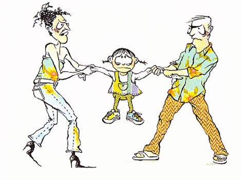

Kapitel 23 Familieret
Som studerende skal du være særlig opmærksom på følgende problemstillinger ved gennemgangen af familieretten:
Relateres til rådgivning af privatkunder
Ægtefællernes hæftelse for lån, ÆL § 3
Ægtefællers særråden, ÆL § 1
Skilsmissebodelingers betydning for privatøkonomien (delingsformue og særeje)
23.1 Ægtefællernes rådighed under ægteskabet
Lov nr. 548 af 30 maj 2017 om ægtefællers økonomiske forhold om ægtefællers økonomiske forhold (forkortet “ÆL”)– gælder for ægtefæller – ikke for ugifte samlevende – og regulerer ægtefællernes økonomiske forhold indbyrdes.
Under ægteskabet er ægtefællerne to selvstændige personer med hver sin økonomi.
Ægtefællerne har særråden og særhæften
Særråden betyder, at uanset ægteskabets indgåelse så råder hver ægtefælle stadig over de aktiver, som den pågældende står som ejer af.
Står bilen i mandens navn kan manden altså frit sælge den uden at spørge sin ægtefælle.
Står bilen derimod i hans ægtefælles navn er det kun hans ægtefælle, der kan sælge bilen.
På samme måde betyder princippet om særhæften, at hver ægtefælle, uanset ægteskabets indgåelse, alene hæfter for sin egen gæld.
Det, at man indgår ægteskab betyder altså som klart udgangspunkt ikke, at man kommer til at hæfte for sin ægtefælles gæld.
En enkelt generel undtagelse fra denne hovedregel er dog skattegæld, som den ene part opbygger under ægteskabet.
Her er den anden part medhæftende på grund af princippet om sambeskatning af ægtefæller.
I alle øvrige forhold har det til gengæld stor betydning hvem af ægtefællerne der står som ejer af de enkelte aktiver og hvem der hæfter for gælden..42
Video: Familieliv og jura
23.2 Ægtefællelovens inddeling

ÆL er inddelt i 7 afsnit:
Afsnit I indeholder almindelige bestemmelser om ægtefællers økonomiske forhold.
Afsnittet indledes med kapitel 1, der indeholder regler om ægtefællers ret til at råde over deres formue, om aftaler mellem ægtefæller, om hæftelse for gæld og om forsørgelsespligt under ægteskabet.
Kapitlet indeholder også den centrale bestemmelse om formuedelingen, der fastslår, at ægtefællers formue som udgangspunkt deles lige mellem dem ved separation, skilsmisse og død.
Afsnit I indeholder endvidere regler om forbud mod salg m.v. af familiens helårsbolig uden den anden ægtefælles samtykke (kapitel 2) og om gaver til og andre aftaler med tredjemand (kapitel 3).
Afsnit II indeholder reglerne om særeje og forhåndsaftaler om formuedelingen.
I kapitel 4 og 5 fastlægges ægtefællers muligheder for ved ægtepagt at indgå aftaler om særeje og andre forhåndsaftaler om formuedelingen, mens kapitel 6 indeholder formkrav til ægtepagter.
Regler om særejebestemmelser om arv og gave fra tredjemand findes i kapitel 7, og kapitel 8 indeholder generelle regler for særeje, herunder om surrogater for og indtægter af særeje.
Afsnit III indeholder reglerne om formuedelingen ved separation og skilsmisse.
I kapitel 9 findes de grundlæggende regler om formuedelingen, herunder en oversigt over de aktiver m.v., der ikke indgår i delingen, fastlæggelse af ophørsdagen, fradrag af gæld, aftaler om formuedelingen og fravigelse af ligedelingen ved kortvarige ægteskaber.
Aktiver, der ikke indgår i formuedelingen, er reguleret i kapitel 10. Kapitel 11-13 indeholder regler om regulerings- og misbrugskrav (de nuværende vederlagskrav), om kompensationskrav (medvirken til formueforøgelse og urimeligt økonomisk stillet) samt pensionskompensation.
Endelig indeholder kapitel 14 regler om ægtefællernes ret til at udtage aktiver, der indgår i formuedelingen.
Afsnit IV (kapitel 15) indeholder særregler om formuedeling ved en ægtefælles død og ved deling af uskiftet bo.
Afsnit V (kapitel 16) indeholder regler om fastsættelse og ændring af ægtefællebidrag under ægteskabet, om statsforvaltningens og Ankestyrelsens sagsbehandling samt om klage over statsforvaltningens afgørelser.
Afsnit VI (kapitel 18) indeholder regler om internationale forhold, navnlig om lovvalget for ægtefællers økonomiske forhold.
Endelig fastlægges tidspunktet for lovens ikrafttræden (den 1. januar 2018) i afsnit VII, der også indeholder overgangsregler og bestemmelser om loven territoriale anvendelse (kapitel 19-21).
Behandlingen af sager om formuedelingen ved separation og skilsmisse er fortsat reguleret i ægtefælleskifteloven, og arveloven og dødsboskifteloven indeholder regler om skifte af dødsboer og uskiftede boer.
23.3 Almindelige bestemmelser om ægtefællers økonomiske forhold
Det følger af ÆL § 1:
”Under ægteskabet råder hver ægtefælle over sin formue, uanset om formuen er erhvervet før eller efter indgåelsen af ægteskabet, dog med de begrænsninger, som følger af stk. 2, § 2 og kapitel 2 og 3”.
Det betyder, at hver ægtefælle har i levende live rådigheden over alt, hvad ægtefællen har indført i fællesboet.
Denne råderet kaldes særråden.
En ægtefælle kan således som udgangspunkt frit sælge, bortgive og pantsætte sine aktiver uden at spørge den anden ægtefælle om lov.
Efter ÆL § 1, stk. 1, råder hver ægtefælle under ægteskabet over sin formue, uanset om formuen er erhvervet før eller efter indgåelsen af ægteskabet, dog med de begrænsninger som følger af § 1, stk. 2 (forringelse af formuen), og ÆL § 2 (begrænsninger i ægtefællers adgang til at indgå aftaler med hinanden), samt kapitel 2 (beskyttelse af familiens helårsbolig) og kapitel 3 (gaver til og aftaler med tredjemand).
Efter ÆL § 1, stk. 2 skal en ægtefælle råde over sin formue på en sådan måde, at den ikke utilbørligt forringes til skade for den anden ægtefælle.
Bestemmelsen omfatter ikke kun råden over ægtefællens delingsformue, men hele ægtefællens formue, herunder navnlig særeje.
Baggrunden herfor er, at forringelse af en ægtefælles særeje m.v. kan får betydning ved formuedelingen, f.eks. hvis den ene ægtefælle har et regulerings- og misbrugskrav efter lovens kapitel 11, der bl.a. kan rettes mod den anden ægtefælles særeje.
Overtrædelse af ÆL § 1, stk. 2 er ikke selvstændigt sanktioneret, men misbrug af formuen kan udløse misbrugskrav efter ÆL § 40, og efter ÆL § 10 kan gaver til tredjemand i visse situationer kræves tilbage.
Bestemmelsen i ÆL § 1, stk. 2 omhandler en ægtefælles ret til at råde i forhold til tredjemand.
Bestemmelsen vedrører adgangen til at råde i levende live, da en ægtefælles ret til at råde over sin formue ved sin død er reguleret i arveloven.
Efter ÆL § 1, stk. 3 kan en ægtefælle under samlivet foretage dispositioner, der ikke uden ulempe kan udsættes, hvis den anden ægtefælle er forhindret i at varetage sine interesser på grund af fravær eller sygdom.
Dette omfatter også afhændelse og pantsætning, når dette af hensyn til familiens underhold er uomgængeligt nødvendigt.

Fast ejendom kan dog ikke afhændes eller pantsættes uden statsforvaltningens tilladelse.
Anvendelse af bestemmelsen i ÆL § 1, stk. 3 forudsætter, at samlivet mellem ægtefællerne består.
Bestemmelsen finder således ikke anvendelse, hvis samlivet er ophævet på grund af uoverensstemmelse, mens bestemmelsen finder anvendelse, selvom ægtefællerne lever adskilt af andre grunde.
Hvis samlivet har været ophævet på grund af uoverensstemmelse, men senere genoptages, finder bestemmelsen anvendelse igen.

Efter ÆL § 1, stk. 3 er en ægtefælle ikke forhindret i at varetage sine interesser, hvis den pågældende er i fængsel, på hospital eller institution eller på udlandsrejse, i det omfang det er muligt at komme i kontakt med den pågældende ægtefælle med henblik på at få samtykke til den omhandlede retshandel, eventuelt pr. telefon eller e-mail.
Bestemmelsen omhandler både ægtefællens bemyndigelse i forhold til den anden ægtefælle til at handle på dennes vegne og ægtefællens legitimation til at handle i forhold til tredjemand.
Bestemmelsen finder også anvendelse, selvom der er formuefællesskab i ægteskabet, og selvom der er tale om en disposition vedrørende et særejeaktiv.
Dispositionsadgangen gælder ikke, hvis en anden er bemyndiget til at foretage dispositionen, eksempelvis ved en almindelig fuldmagt eller ved en fremtidsfuldmagt efter lov nr. 618 af 8. juni 2016 om fremtidsfuldmagter:
En fremtidsfuldmagt er en fuldmagt, som kan sættes i kraft en gang i fremtiden, hvis du bliver syg eller svækket og mister evnen til selv at tage vare på dine økonomiske eller personlige forhold. Du kan give fremtidsfuldmagt til en eller flere personer, som du selv udpeger.
Bemyndigelsen til at foretage dispositionen kan også tilkomme en værge, der er beskikket efter værgemålsloven.
Ægtefællernes adgang til at indgå aftaler og pådrage sig forpligtelser over for hinanden reguleres af ÆL § 2.
Efter § 2, stk. 1, kan ægtefæller under ægteskabet indgå aftaler med hinanden, give hinanden gaver og pådrage sig forpligtelser over for hinanden med de undtagelser, der følger af ÆL § 2, stk. 2 og 3 samt konkurslovens § 64.
Der kan f.eks. ske overdragelse af aktiver fra den ene ægtefælle til den anden ægtefælle, leje af hinandens aktiver, ydelse af lån og ansættelse af den ene ægtefælle i den anden ægtefælles virksomhed.
Det gælder, uanset om de har særeje eller delingsformue, at de fx med juridisk gyldighed kan købe hinandens ting eller pantsætte dem til hinanden, indgå lejeaftaler og arbejdsaftaler mv., se dommene U 1943 947, U 1931 294 H og U 1930 1 H.
Da ægtefæller ofte tager ret formløst på de aftaler, de indgår under ægteskabet, kan det i praksis være vanskeligt at afgrænse lån, gaver, sameje og forsørgelse.
Spørgsmålet har konsekvenser dels over for ægtepars kreditorer, dels over for ægtefællerne selv i en senere bodelingssituation, især for ægtefæller med særeje.
Den ægtefælle, der hævder at have et gældskrav på den anden, må føre bevis herfor, idet der som udgangspunkt er en formodning for, at overførsel af pengebeløb til ægtefællen sker til opfyldelse af forsørgelsespligten.
Ægtefællerne kan også pådrage sig forpligtelser over for hinanden uden aftale, f.eks. som følge af, at en ægtefælle uagtsomt eller forsætligt forvolder skade på den anden ægtefælles ejendele eller person.
Der kan være tale om erstatnings- eller kontraktsforpligtelser, jf. dommene: i
U 1986 212 (erstatningsansvar for uberettiget afhændelse)*;
U 1966 151 H:
Tvist mellem fraskilte ægtefæller, som havde haft fuldstændig særeje, om retten til diverse smykker og pelse. Ca. 1 år efter opløsningen af et ægteskab, som havde varet ca. 7 år, og hvori der bestod fuldstændigt særeje, anlagde H sag mod M med påstand om udlevering af eller erstatning for en forlovelsesring med brillanter, 5 minkskind og en 5 karat stor brillantring. M gjorde gældende, at H under et skænderi havde tilbagegivet ham forlovelsesringen, som han derefter havde solgt, og at skindene aldrig havde tilhørt H. Med hensyn til den store brillantring bestred M, at han havde givet den til 11 og hævdede, at han alene havde haft den i udvalg og overvejet at købe den som kapitalanbringelse; antoges en gave at foreligge, var M imidlertid enig i, at der efter ægtefællernes forhold ikke krævedes ægtepagt. Det ansås ikke for godtgjort, at H havde tilbagegivet forlovelsesringen til M, der heller ikke fik medhold for så vidt angår minkskindene. Med hensyn til den store brillantring fandt Højesteret ikke tilstrækkelig grund til at ændre landsrettens bevisbedømmelse, hvorefter ringen måtte anses foræret H af M. (Dissens). Idet ringenes værdi ansattes til henholdsvis 5000 kr. og 38.000 kr., dømtes M til at betale disse beløb og udlevere skindene.
U 1963 1056 (drabsforsøg, personskade):
H erstatningsansvarlig over for M for mordforsøg. Kravet ej nedsat p.g.a. parternes formuefællesskab. Om kravet skulle indgå i fællesboet, henhørte under skifteretten.
U 1954 825 (regreskrav for tab af forsørger ikke anerkendt);
U 1959 403 (færdselsuheld) og U 1936 636 (færdselsuheld).
Ægtefællerne kan f.eks. have en interesse i at få erstatningsansvaret fastlagt, hvor skaden er dækket af en forsikring, f.eks. ansvarsforsikring for en bil.
Efter ÆL § 2, stk. 2 kan ægtefæller ikke ved aftale fravige reglerne i loven, medmindre andet følger af lovens kapitler 4-6 (aftaler om særeje og andre aftaler om formuedeling, samt krav om ægtepagt for sådanne aftaler), samt ÆL § 25, stk. 2, (aftaler om surrogater for og indtægter af særeje og ÆL § 32 (aftaler om formuedeling i forbindelse med separation og skilsmisse).
Kort om ægtepagt
En ægtepagt om særeje er en skriftlig aftale mellem to ægtefæller.
Aftalen bestemmer, at der ikke skal gælde formuefællesskab i ægteskabet, som man ellers automatisk får, når man gifter sig.
Formuefællesskab betyder kort sagt, at man som ægtefæller skal dele formuer i tilfælde af separation, skilsmisse eller død.
Hvis man som ægtefæller ikke ønsker dette, kan man helt eller delvist ophæve denne betingelse med en ægtepagt om særeje.
Der er ingen regler for, hvornår en ægtepagt skal laves.
Det betyder, at en ægtepagt både kan laves og indgås før eller efter man er blevet gift.
Derfor er ægtepagtens gyldighed den samme, uanset hvad man vælger.
Det er kun en skriftlig og tinglyst ægtepagt (i Personbogen), der vil være gyldig.
Da en ægtepagt er en aftale, kræves det (som ved alle andre typer af aftaler), at der er enighed mellem parterne.
Det er altså ikke nok, at den ene ægtefælle eksempelvis ønsker særeje i ægteskabet.
Begge ægtefæller skal være enige herom og indgå en skriftlig (og tinglyst i Personbogen) ægtepagt for, at ønsket bliver en realitet.
Ægtepagter som begreb bliver behandlet senere nedenfor.
Video: Tinglysning af ægtepagt
Video: Sådan laver du selv en ægtepagt
Begrænsninger i ægtefællernes aftalefrihed:
Ægtefæller kan navnlig ikke give afkald på retten til forsørgelse efter ÆL § 4, stk. 1, eller på forhånd aftale fravigelse af reglerne om samtykke til dispositioner over familiens helårsbolig (lovens kapitel 2).
Ægtefæller kan ligeledes ikke indgå forhåndsaftaler om formuedelingen ved separation, skilsmisse og død (lovens afsnit III og IV), om regulerings- og misbrugskrav (lovens kapitel 11), om retten til kompensation (lovens kapitel 12), om pensionskompensation (lovens kapitel 13) og om udtagelse af aktiver (lovens kapitel 14).
Efter ÆL § 2, stk. 3 kan ægtefæller ikke gyldigt aftale, at det, som den ene ægtefælle fremtidigt erhverver, uden vederlag skal tilfalde den anden ægtefælle.
Princippet om ægtefællens særhæften:
Efter ÆL § 3 hæfter hver af ægtefællerne med den del af delingsformuen, hvorover den pågældende ægtefælle råder, og med sit særeje for de forpligtelser, der påhviler ægtefællen, hvad enten forpligtelserne er opstået før eller under ægteskabet.
Bestemmelsen medfører, at en ægtefælle alene hæfter for sin egen gæld.
Dette kaldes særhæften.
En ægtefælle hæfter således som udgangspunkt ikke for den anden ægtefælles gæld. Ægtefæller hæfter dog sammen for forpligtelser, som de har påtaget sig sammen, f.eks. ved i fællesskab at optage et lån.
Ægtefæller hæfter også sammen for forpligtigelser, der følger af, at de sammen ejer et aktiv (sameje), f.eks. ejendomsskatter vedrørende en fast ejendom, som de begge er medejere af.
Ægtefæller hæfter efter almindelige formueretlige regler sammen for forpligtelser, som de har påtaget sig sammen, f.eks. ved i fællesskab at optage et lån, herunder et realkreditlån i fast ejendom.
Ægtefæller hæfter også sammen for forpligtigelser, der følger af, at de ejer et aktiv i sameje.
Hvis de f.eks. sammen ejer fast ejendom, hæfter de begge for f.eks. ejendomsskatter.
Fælles hæftelse kan også følge af fuldmagt, kaution mv.
Overladelse af kreditkort eller kontokort kan efter omstændighederne anses som en særlig form for fuldmagt.
Retspraksis har ud fra stiltiende accept eller passivitet statueret fælles hæftelse for reparationer mv. udført på en ægtefælles ejendom, selvom den anden ægtefælle har bestilt arbejdet, se f.eks. dommene U 1994 328, U 1991 343 og U 1987 43.
Hæftelse for den anden ægtefælles gæld kan også følge af lovgivningen, bl.a. § 12 i lov om inddrivelse af gæld til det offentlige, hvorefter en ægtefælle under visse betingelser hæfter for den anden ægtefælles skattegæld, og
§ 92, stk. 2, i aktivloven, hvorefter ægtefæller hæfter solidarisk for krav på tilbagebetaling af hjælp til betaling af renter og afdrag på lån i fast ejendom, selv om kun den ene ægtefælle er ejer af ejendommen.
23.3.1 Gensidig forsørgelsespligt
Det følger af ÆL § 4, at ægtefællerne har en gensidig forsørgelsespligt. ”Under ægteskabet har ægtefæller pligt til at forsørge hinanden”, jf. ÆL § 4, stk. 1.
Hvad en ægtefælle modtager fra den anden ægtefælle som forsørgelse efter ÆL § 4, stk. 1, tilhører modtageren.
Forsørgelsespligten efter § 4 er en grundlæggende del af ægteskabet.
Der er tale om en egentlig retlig forpligtelse.
Det er imidlertid i høj grad overladt til ægtefællerne selv at indrette deres indbyrdes forsørgelse efter ønsker, behov og evner.
Ægtefællerne aftaler således selv den indbyrdes fordeling af familiens udgifter og af forsørgelsens form.
En ægtefælle kan således opfylde sin forsørgelsespligt ved pengeydelser, ved arbejde i hjemmet, pasning af børnene eller arbejde i en virksomhed, som den anden ægtefælle ejer, ligesom der kan være tale om forbrug af formue.
Forsørgelsespligten omfatter i almindelighed navnlig mad, bolig, transport, forsikringer, almindelige forbrugsgoder m.v.
Hertil kommer tøj, medicin, tandlæge- og lægeregninger, foreningskontingenter, ferie mv.
Det, den ene ægtefælle overfører til den anden ægtefælle, er ikke et lån, der kan kræves tilbage, og der er heller ikke tale om en gave.
Det kan således ikke kræves tilbage af en ægtefælle i forbindelse med en separation eller skilsmisse.
Har en ægtefælle overladt den anden et pengebeløb eller afholdt udgifter for denne, vil det undertiden være vanskeligt at afgøre, om der var tale om en ydelse til fyldestgørelse af forsørgelsespligten efter ÆL § 4, et lån eller en gave.
Spørgsmålet har konsekvenser dels over for ægtepars kreditorer, dels over for ægtefællerne selv i en senere bodelingssituation, især for ægtefæller med særeje.
Den ægtefælle, der hævder at have et gældskrav på den anden, må føre bevis herfor, idet der som udgangspunkt er en formodning for, at overførsel af pengebeløb til ægtefællen sker til opfyldelse af forsørgelsespligten.
Forsørgelsespligten får for boligen den konsekvens, at den ægtefælle, der har skødet på den pågældende faste ejendom eller har lejekontrakt på lejligheden, ikke kan få den anden ægtefælle udsat af boligen ved en umiddelbar fogedforretning, jf. herved dommen U 2001 2184.
Lejebolig er også beskyttet, jf. lejelovens § 81, stk. 2:
”Lejeren må dog ikke uden sin ægtefælles samtykke opsige lejemål om familiens bolig eller om lokaler, hvortil ægtefællernes eller den anden ægtefælles virksomhed er knyttet”.
Denne bestemmelse er ufravigelig, jf. lejelovens § 92, stk. 2, se nærmere nedenfor afsnit 20.1.2.
Forsørgelsespligten gælder kun under ægteskabet og ophører ved separation, skilsmisse og død.
Der er i ÆL § 56, stk. 3, indført en begrænset udvidelse af forsørgelsespligten, idet adgangen til at få fastsat bidrag også skal gælde under behandlingen af en sag om separation og skilsmisse, indtil spørgsmålet om bidragspligt efter separation eller skilsmisse er endeligt afgjort.
Den privatretlige forsørgelsespligt går fortsat forud for offentligretlig forsørgelse.
Det betyder, at de socialretlige regler først bliver relevante, hvis der ikke er mulighed for, at forsørgelsen kan rummes ægtefællerne imellem.
Den offentligretlige forsørgelse er reguleret i aktivlovens §§ 2 og 97.
Forsørgelsen af ægtefællernes fælles børn er (fortsat) reguleret af reglerne i lov om børns forsørgelse.
23.3.2 Stiftelse af formuefællesskabet (delingsformue)
I forbindelse med ægteskabets indgåelse stiftes formuefællesskab (delingsformue), jf. ÆL § 5, som regulerer formuedelingen ved separation, skilsmisse og død.
Ægtefællernes legale formueordning er den ordning, der gælder for ægtefællers økonomiske forhold, i det omfang ægtefællerne ikke har aftalt andet (se lovens kapitel 4 og 5), eller andet er bestemt af tredjemand (se lovens kapitel 7).
Formueordningen indebærer overordnet set, at ægtefællernes formuer deles lige ved separation, skilsmisse og død.

Efter ÆL § 5, stk. 1, 1. pkt., deler ægtefæller ved separation eller skilsmisse deres formuer lige, medmindre de har indgået en aftale om delingen af deres formue efter ÆL § 32, eller andet følger af ÆL § 26 om formuedelingen ved separation og skilsmisse.
Denne bestemmelse fastlægger navnlig, hvilke af ægtefællernes aktiver der indgår i ligedelingen, og som dermed er delingsformue, og hvilke aktiver, der ikke indgår i ligedelingen.
ÆL § 5, stk. 1, 2. pkt. fastlægger formuedelingen ved en ægtefælles død.
Det følger af bestemmelsen, at ved en ægtefælles død eller ved skifte af et uskiftet bo deles ægtefællernes formuer lige mellem den længstlevende ægtefælle eller dennes dødsbo og førstafdødes dødsbo, medmindre andet følger af ÆL § 51 om formuedelingen ved den første ægtefælles død og ved skifte af uskiftet bo i den længstlevende ægtefælles levende live.
Denne bestemmelse fastlægger navnlig, hvilke af ægtefællernes aktiver der indgår henholdsvis ikke indgår i ligedelingen af ægtefællernes formue i forbindelse med dødsboskiftet ved førstafdødes død og ved skifte af uskiftet bo i den længstlevende ægtefælles levende live.
Det fremgår af ÆL § 5, stk. 2, at en ægtefælles formue, der efter ÆL § 5, stk. 1 ligeledes, betegnes delingsformue.
Ægtefællernes delingsformuer udgør et formuefællesskab mellem ægtefællerne.
23.3.3 Dispositioner over familiens helårsbolig
Efter ÆL § 6, stk. 1, må en ægtefælle ikke uden den anden ægtefælles samtykke indgå aftale om at overdrage, pantsætte, udleje eller bortforpagte familiens helårsbolig eller en bolig, der er bestemt til familiens helårsbolig, når boligen helt eller delvist helt eller delvist indgår i ligedelingen efter ÆL § 5, stk. 1, 1. pkt.
Bestemmelsen i § 6, stk. 1 omfatter alle helårsboliger, bortset fra lejeboliger, hvor lejerægtefællens ret til at disponere over lejligheden er reguleret af lejelovens § 81, stk. 2, og almenlejelovens § 84, jf. § 87.
Reglen er således i forhold til den gældende bestemmelse udvidet til også at omfatte andelsboliger og andre boliger omfattet af andelsboliglovens § 1 a, der blandt andet omfatter boligaktieselskaber, boliganpartsselskaber, boligsamejer, boliginteressentskaber og boligkommanditselskaber.
Er ægtefællernes helårsbolig f.eks. en husbåd eller en campingvogn, er den også omfattet.
I forhold til den gældende bestemmelse er bestemmelsen også begrænset, idet den ikke omfatter erhvervsejendomme og heller ikke fritidshuse, medmindre de tillige anvendes som helårsbolig.
Ikke kun en ejendom, som familien aktuelt bor i, er omfattet af bestemmelsen i § 6, stk. 1, men bestemmelsen omfatter f.eks. også en nyindkøbt ejendom eller et hus under opførelse, som familien endnu ikke har nået at flytte ind i, hvilket fremgår af ordene "bestemt til“.
Også en ejendom, der midlertidigt er udlejet under f.eks. en udstationering i udlandet, er omfattet af bestemmelsen, hvis det er hensigten, at familien skal vende tilbage til boligen efter det midlertidige ophold.
Det afgørende er, hvor familien faktisk bor eller har til hensigt at bo, og ikke boligens status af helårs- eller fritidshus.
Anvendes et helårshus faktisk som fritidshus, er det ikke omfattet af bestemmelsen, og anvendes et fritidshus faktisk som helårsbolig, er det omfattet.
Flere ejendomme tilhørende ægtefællerne kan være omfattet af bestemmelsen, f.eks. hvis familien bor i ét hus i sommerhalvåret og et andet i vinterhalvåret, eller hvis familien bor i et hus, mens et nyt hus er under opførelse.
ÆL § 6, stk. 1 beskytter kun selve helårsboligen. Det er således fortsat tilladt uden samtykke f.eks. at frasælge eller bortforpagte et jordstykke fra en ejendom.
Det afgørende for, om salg af en del af en ejendom kræver samtykke, vil som efter hidtidig praksis være, om den del, der ønskes frasolgt, udgør en naturlig bestanddel af den faste ejendom, og dermed om ejendommen efter afhændelsen af en del af den stadig kan anvendes til familiens bolig.
ÆL § 6, stk. 1 omfatter også ejendomme med mere end en beboelseslejlighed, hvis familien bor i en af lejlighederne.
Det afgørende er, om dispositionen omfatter familiens helårsbolig.
Bor familien f.eks. i en lejlighed i en udlejningsejendom, som den ene ægtefælle ejer, kan de andre lejligheder udlejes uden samtykke fra den, der ikke ejer ejendommen.
Udstykkes en sådan ejendom i ejerlejligheder, kan de øvrige lejligheder sælges uden samtykke. Salg af hele ejendommen kræver derimod samtykke.
Beskyttelsen af familiens bolig, kun skal omfatte bolig, hvor der er delingsformue (formuefællesskab).
Beskyttelsen skal således alene omfatte boliger, der helt eller delvist indgår i ligedelingen efter ÆL § 5, stk. 1, 1. pkt.
Dette indebærer, at en bolig ikke er omfattet af beskyttelsen i ÆL § 6, stk. 1, når boligen helt er særeje (skilsmissesæreje, fuldstændigt særeje eller kombinationssæreje), erhvervet for midler fra en pensionsrettighed omfattet af ÆL §§ 34 og 35, for personlige erstatninger omfattet af ÆL § 36, eller for midler omfattet af ÆL § 37 om overdragelige og personlige rettigheder.
Hvis boligen er erhvervet for både delingsformue og særeje, er den efter ÆL § 24, stk. 1, brøkdelssæreje. Den del af boligen, der er delingsformue, indgår i formuedelingen efter ÆL § 5, stk. 1, 1. pkt., og dermed indgår boligen i formuedelingen, også selvom delingsformuen kun udgør en beskeden del af boligens værdi.
Boligen er således omfattet af beskyttelsen efter ÆL § 6.
Hvis hele ejerægtefællens formue er brøkdelssæreje, sumsæreje, eller sumdeling efter ÆL § 12, stk. 2, nr. 3-5, er ægtefællens enkelte aktiver ikke fuldt ud særeje, hvorfor boligen ligeledes er omfattet af beskyttelsen efter ÆL § 6.
Tilsvarende gælder ved retten til at udtage den anden ægtefælles ejendele efter ÆL § 48.
I modsætning til den tidligere gældende lovs § 18, stk. 1, 3. pkt., i retsvirkningsloven, er værgens beføjelser ikke udtrykkeligt reguleret.
Det indebærer, at de almindelige regler om værgemål finder anvendelse. Er en ægtefælle frataget den retlige handleevne efter værgemålslovens § 6, kan værgen give samtykke på ægtefællens vegne.
Dette forudsætter selvsagt, at værgen ikke er inhabil, f.eks. fordi ejerægtefællen selv er værge. I sådanne tilfælde kan der beskikkes en særlig værge efter værgemålslovens § 47.
Efter ÆL § 6, stk. 2, kræves samtykke efter ÆL § 6, stk. 1, selv om ægtefællerne har ophævet samlivet, og efter det ÆL § 6, stk. 3 kræves samtykke efter § 6, stk. 1 også efter separation eller skilsmisse, indtil der efter almindelige formueretlige principper er indgået aftale, eller der er truffet endelig afgørelse om boligen efter ÆL § 48 om ægtefællernes ret til at udtage aktiver ved formuedeling i forbindelse med separation og skilsmisse.
Hvis der ikke er taget stilling til, hvad der skal ske med ejendommen, skal ejerægtefællen også efter separation eller skilsmisse have den anden ægtefælles samtykke for at kunne foretage dispositioner omfattet af ÆL § 6, stk. 1.
Hvis samtykke nægtes, kan ejerægtefællen anmode om tilladelse fra statsforvaltningen eller skifteretten efter ÆL § 7.
En ægtefælle kan beskytte sig mod, at den anden ægtefælle sælger eller pantsætter en ejendom uden samtykke ved at få sin vielsesattest noteret på ejendommens blad i tingbogen.
Dette vil efter loven også kunne ske i tilfælde, hvor ejendommen er delvis særeje.
Har en ægtefælle indgået en aftale, der er omfattet af ÆL § 6, uden samtykke fra den anden ægtefælle og uden tilladelse efter ÆL § 7, kan aftalen efter anmodning fra den anden ægtefælle omstødes ved dom.
Dette gælder dog ikke, hvis den anden part i aftalen godtgør, at parten ikke vidste eller burde have vidst, at den ægtefælle, der ejer boligen, ikke var berettiget til at indgå aftalen, jf. ÆL § 8, stk. 1.
Bestemmelsen i ÆL § 9 fastslår, at beskyttelsesreglerne i ÆL §§ 6-8 kun finder anvendelse på boliger, der befinder sig i Danmark.
Dette skyldes, at en afgørelse om dispositioner over boliger i andre lande bør træffes af myndighederne i det pågældende land, ikke mindst fordi danske afgørelser herom ikke kan forventes at blive anerkendt i andre lande.
23.3.4 Aftaler med tredjemand om erhvervsløsøre
I det tilfælde, hvor en ægtefælle har givet tredjemand en gave.
Hvis bortgivelsen af gaven medfører nærliggende risiko for, at den anden ægtefælle ikke vil kunne få dækket sine krav ved en formuedeling, og tredjemand (gavemodtageren) vidste eller burde vide dette, giver bestemmelsen i ÆL § 10 denne ægtefælle mulighed for at kræve, at tredjemand giver gaven tilbage.
De krav, som efter ÆL § 10 kan danne grundlag at kræve gaven tilbage, er navnlig regulerings- og misbrugskrav (lovens kapitel 11), krav på kompensation i særlige situationer (lovens kapitel 12) og krav på pensionskompensation (lovens kapitel 13).
Gaven kan ikke kræves tilbage, hvis gavegiver ved gaven ikke blev insolvent (konkurslovens § 17, stk. 2), og gavegiver utvivlsomt havde tilstrækkelige midler til at dække sine forpligtelser, dvs. ikke blev insufficient.
Efter konkurslovens § 17, stk. 2, er en skyldner insolvent, hvis den pågældende ikke kan opfylde sine forpligtelser, efterhånden som de forfalder, medmindre betalingsudygtigheden må antages blot at være forbigående.
Gavegiver skal ikke som i konkurslovens § 64 godtgøre at have været sufficient og likvid trods gaven, men alene at gaven ikke medførte begrundet risiko for insufficiens og insolvens.
Det forudsættes, at ÆL § 10 kun anvendes ved gaver af stor økonomisk værdi, hvilket udelukker lejlighedsgaver.
De gaver, der kan kræves tilbage, vil typisk stå i misforhold til gavegivers økonomiske forhold, hvilket beror på en konkret vurdering af gavegivers formue- og indtægtsforhold.
Også motivet for gaven indgår i vurderingen.
Der vil således navnlig være grund til at kunne kræve gaven tilbage, hvis gavegiver som forberedelse af eller i forbindelse med en samlivsophævelse giver værdifulde gaver til sin nye partner eller andre familiemedlemmer eller venner, med henblik på at unddrage den anden ægtefælle fra at få dækket sine krav.
Gaven kan ikke kræves tilbage, hvis den er givet af midler, der ikke ville være indgået i formuedelingen, typisk fordi midlerne var særeje.
At give en gave af sit særeje m.v. kan dog være til skade for den anden ægtefælle, hvis gavegiver står tilbage med en betydelig gæld, der efter ÆL § 29, stk. 2, ville være blevet dækket helt eller delvist af gaven, men nu skal dækkes af delingsformuen.
Det samme gælder, hvis den anden ægtefælle har regulerings- og misbrugskrav efter lovens kapitel 11, der på grund af bortgivelsen ikke kan dækkes af gavegivers resterende formue.
Endelig kræves det, at gavemodtageren vidste eller burde vide, at gaven var givet under de foreliggende omstændigheder.
Dette vil f.eks. være tilfældet, hvis gavegivers nye partner er klar over, at gavegiver er i færd med at overføre sin formue til partneren inden samlivsophævelse.
Det er den ægtefælle, der kræver gaven tilbage, der har bevisbyrden herfor.
Adgangen til at kræve en gave tilbage tilkommer kun ægtefællen selv, herunder den længstlevende ægtefælle efter gavegivers død, men ikke ægtefællens arvinger eller kreditorer.
Bestemmelsen finder således anvendelse i relation til formuedeling ved separation og skilsmisse (lovens afsnit III) og formuedeling ved en ægtefælles død (lovens afsnit IV).
Det er ikke en betingelse for at anvende bestemmelsen, at ægtefællerne bliver separeret eller skilt, og bestemmelsen kan således anvendes, uden at der sker formuedeling.
Uden formuedeling kan det dog være vanskeligt for den pågældende at godtgøre, at gaven medførte nærliggende risiko for, at ægtefællen ikke ville kunne få dækket sine krav i forbindelse med formuedelingen.
Efter bestemmelsen gives gaven tilbage til gavegiveren sådan, at den anden ægtefælle kan få dækket sine krav ved formuedelingen i gavegiverens formue.
Hvis gavegiver erklæres konkurs, finder omstødelsesreglerne i konkursloven anvendelse.
Efter ÆL § 10, stk. 2 skal retssag om krav efter § 10, stk. 1 anlægges inden 1 år efter, at den anden ægtefælle har fået kendskab til gaven, og inden 3 år efter det tidspunkt, hvor gaven blev givet.
Hvis tinglysning eller anden sikringsakt er nødvendig for, at gavemodtager opnår beskyttelse mod retsforfølgning fra gavegivers kreditorer, anses gaven for givet på det tidspunkt, hvor sikringsakten blev foretaget.
Har en ægtefælle overladt løsøre til brug i den anden ægtefælles erhvervsvirksomhed, bliver den ægtefælle, der ejer løsøret, bundet af aftaler om løsøret, som den anden ægtefælle har indgået med tredjemand.
Dette gælder dog ikke, hvis tredjemand vidste eller burde vide, at ægtefællen ikke var berettiget til at indgå aftalen, jf. ÆL § 11.
23.3.5 Særeje og forhåndsaftaler om formuefordelingen

Efter ÆL § 12 kan ægtefæller ved ægtepagt indgå følgende aftaler om særeje.
En ægtepagt om særeje er en skriftlig aftale mellem to ægtefæller.
Aftalen bestemmer, at der ikke skal gælde formuefællesskab i ægteskabet, som man ellers automatisk får, når man gifter sig.
Formuefællesskab betyder kort sagt, at man som ægtefæller skal dele formuer i tilfælde af separation, skilsmisse eller død.
Særeje er en formueordning, der betyder, at man ikke nødvendigvis skal dele alt i tilfælde af skilsmisse eller død. Der findes flere forskellige særejeformer:
fuldstændigt særeje,
skilsmissesæreje,
kombinationssæreje,
brøkdelssæreje og
tidsbegrænset særeje.
Skilsmissesæreje gælder kun ved skilsmisse.
23.3.5.1 Fuldstændigt særeje
Hvis man har aftalt et fuldstændigt særeje, indebærer dette at der er særejevirkning under ægteskabet, ved separation og skilsmisse, samt ved en eller begge ægtefællers død.
Med andre ord betyder det, at det man har som sit fuldstændige særeje ikke skal deles med den anden ægtefælle i forbindelse med skilsmisse.
Har man ikke oprettet særeje vil det betyde, at i forbindelse med en skilsmisse skal der ske en deling og derved skal hver part opgøre sin bodel i form af aktiver fratrukket passiver.
Af sin positive bodel skal man give halvdelen til sin ægtefælle – begge parter ender derved med at gå ud af ægteskabet med lige mange penge, forudsat at begge parter har en positiv bodel og derfor ikke er insolvente.
Har man oprettet fuldstændigt særeje vil denne deling i form af bodele ikke ske hverken i tilfælde af skilsmisse eller død.
Hvis ægteskabet ophører ved død vil den længstlevende ægtefælle dog stadig modtage arv af det fuldstændige særeje.
Det skal dog bemærkes, at den længstlevende ægtefælle ikke har mulighed for at sidde i uskiftet bo med de midler der er fuldstændigt særeje.
23.3.5.2 Skilsmissesæreje
Skilsmissesærejet er en kombination af de to formueretlige grundformer fælleseje og fuldstændigt særeje.
Der er særejevirkninger under ægteskabet, samt ved separation og skilsmisse, men fællesejevirkninger ved død, uanset hvem af ægtefællerne, der dør først. Der er mulighed for at sidde i uskiftet bo.
Ulempen ved skilsmissesærejet er, at fællesejet opstår uanset hvem af ægtefællerne, der dør først.
Dette kan være uheldigt i de tilfælde, hvor det er den ægtefælle med megen gæld, der dør som den første.
Den længstlevende ægtefælle er nemlig i denne situation forpligtet til at lade sin formue indgå i delingen med den førstafdøde ægtefælles kreditorer eller særarvinger.
Derfor bør man normalt aldrig bruge et rent skilsmissesæreje, men derimod aftale et ægtefællebegunstigende kombinationssæreje.
23.3.5.3 Kombinationssæreje
Kombinationssæreje er således en kombination af skilsmissesæreje og fuldstændigt særeje.
Ved kombinationssæreje er der altid særeje ved separation og skilsmisse (skilsmissesæreje), og dette skilsmissesæreje bliver i bestemte situationer særeje ved en ægtefælles død (dvs. fuldstændigt særeje).
Ægtefællerne kan aftale, i hvilke situationer der skal være særeje ved en ægtefælles død afhængigt af, hvem af ægtefællerne der dør først.
Skilsmissesæreje kan således kombineres med særeje ved død på en række forskellige måder.
Kombinationssærejets betydning på et dødsboskifte afhænger derfor dels af den valgte kombination af skilsmissesæreje og fuldstændigt særeje og dels af, hvem af ægtefællerne der dør først.
Valget af, i hvilke situationer der skal være særeje ved en ægtefælles død, afhænger af, om ægtefællerne ønsker at begunstige den ene af ægtefællerne ved dødsfaldet frem for førstafdødes eller længstlevendes arvinger (ægtefællebegunstigende kombinationssæreje), eller om de ønsker at begunstige deres arvinger (arvingsbegunstigende kombinationssæreje).
23.3.5.4 Ægtefællebegunstigende kombinationssæreje
For de fleste er det mest fordelagtige at aftale et såkaldt ægtefællebegunstigende kombinationssæreje.
Dette indebærer, at der er særeje i tilfælde af separation og skilsmisse.
Men når den første ægtefælle dør, bliver dennes særeje til fælleseje og skal således deles med den længstlevende.
Den længstlevende ægtefælles særeje opretholdes imidlertid og bliver altså til fuldstændigt særeje.
Det er derfor kun førstafdødes skilsmissesæreje, der bliver til fælleseje ved død.
Det ægtefællebegunstigende kombinationssæreje er en særejeform, der tiltaler de fleste, idet formen kombinerer fordelene ved skilsmissesæreje og fuldstændigt særeje, således at den længstlevende ægtefælle sikres bedst muligt i forhold til førstafdødes arvinger og eventuelle kreditorer.
Ægtefællebegunstigende kombinationssæreje anvendes således i tilfælde, hvor ægtefællerne ønsker at tilgodese den længstlevende ægtefælle fremfor ægtefællernes sær- og/eller fællesbørn.
Ægtefæller aftaler ofte et ægtefællebegunstigende kombinationssæreje, hvor ægtefællerne har skilsmissesæreje, der skal være fuldstændigt særeje for længstlevende ved førstafdødes død, uanset hvem af ægtefællerne der dør først.
Dette indebærer, at førstafdødes formue er delingsformue.
Fordelene for den længstlevende er, at længstlevende har mulighed for enten at sidde i uskiftet bo med førstafdødes formue eller modtage boslod og arv af førstafdødes formue, samtidig med at længstlevendes egen formue bliver særeje og dermed ikke skal deles med førstafdødes arvinger, navnlig førstafdødes særbørn og ægtefællernes fællesbørn.
23.3.5.5 Arvingsbegunstigende kombinationssæreje
Arvingsbegunstigende kombinationssæreje anvendes i tilfælde, hvor ægtefællerne ønsker at tilgodese enten førstafdødes eller længstlevendes arvinger frem for ægtefællen.
Ved arvingsbegunstigende kombinationssæreje kan eksempelvis førstafdødes arvinger tilgodeses ved, at førstafdødes formue er fuldstændigt særeje, mens længstlevendes formue er delingsformue.
Dette indebærer, at førstafdødes formue ikke deles med længstlevende, inden formuen deles med førstafdødes arvinger (ægtefællen og førstafdødes børn).
Samtidig skal længstlevendes formue, der er delingsformue, deles lige mellem førstafdødes arvinger og længstlevende. Længstlevende har ikke mulighed for at sidde i uskiftet bo.
23.3.5.6 Dødsfaldssæreje ikke muligt
Det er ikke muligt at etablere et såkaldt dødsfaldssæreje, hvor der er fælleseje ved skilsmisse men fuldstændigt særeje ved død.
Hvis man vil have fuldstændigt særeje i tilfælde af død må man også have særeje i tilfælde af skilsmisse.
23.3.5.7 Tidsbegrænset særeje
Man har mulighed for at tidsbegrænse særejet, således at man f.eks. har særeje de første 10 år af ægteskabet, hvorefter særejet automatisk bliver til fælleseje.
23.3.5.8 Brøkdelssæreje
Det er muligt at aftale, at en bestemt brøkdel af ens formue eller af et bestemt aktiv skal være særeje.
Der kan dog være en del praktiske vanskeligheder forbundet med en sådan særejeform.
For som tiden går, kan midlerne blive blandet sammen eller nyt blive anskaffet, og det kan blive svært at udskille hvad der er fælleseje og hvad der er særeje.
23.3.5.9 Hvad kan man aftale særeje om?
Det er muligt at aftale, at alt hvad man hver for sig ejer på nuværende tidspunkt, samt alt hvad man erhverver i fremtiden skal være særeje.
Man kan også aftale, at alt hvad ægtefællerne bringer ind i ægteskabet skal være deres særeje, men alt hvad der erhverver under ægteskabet skal være fælleseje.
Det er også muligt at aftale særeje vedrørende bestemte ejendele, f.eks. sommerhuset, båden eller motorcyklen.
23.3.5.10 Hvordan etableres særeje?
Som tidligere nævnt er udgangspunktet, at man automatisk får fælleseje ved indgåelse af ægteskab.
Derfor er det nødvendigt at oprette en ægtepagt, hvis man ønsker særeje.
Særeje kan også opstå, hvis det er bestemt af en gavegiver eller I forbindelse med et arveforskud, hvor det særskilt bestemmes at arveforskuddet skal være særeje.
En arvelader kan også i et testamente bestemme, at arven skal tilfalde arvingen som særeje. Dette kan gælde både tvangsarv og friarv.
Endelig kan man også i en begunstigelsesklausul i livs- og ulykkesforsikringer indsætte særejebestemmelser.
23.3.5.11 Hvordan særeje stiftes
Særeje stiftes ved:
Ægtepagt, jf. § 12 og § 20
Gave, jf. ÆL § 23
Testamente, jf. ÆL § 23
Begunstigelse i forsikring, jf. forsikringsaftalelovens § 103, stk. 2
Begunstigelse i pension, jf. Pensionsopsparingslovens § 3, stk. 2
Ægtefæller kan ved ægtepagt aftale, at en pensionsrettighed skal være særeje, jf. ÆL § 12.
En sådan aftale kan også omfatte fremtidige indbetalinger på pensionsrettigheden, jf. ÆL § 13.
Efter ÆL § 13 kan ægtefællerne ved ægtepagt aftale, at en pensionsrettighed skal være særeje i overensstemmelse med de muligheder for særeje, der findes i ÆL § 12.
Pensionsrettigheden kan således gøres til skilsmissesæreje, fuldstændigt særeje, kombinationssæreje osv., ligesom særejet kan gøres tidsbegrænset.
ÆL § 13 omfatter både privatpension og pension oprettet som led i ansættelsesforhold.
Da rimelige pensioner efter ÆL § 34 ikke indgår i formuedelingen, vil det som udgangspunkt ikke være nødvendigt at aftale, at en pensionsrettighed er særeje, for at kunne holde rettigheden uden for formuedelingen.
Der er imidlertid to situationer, hvor særejebestemmelsen især kan få betydning.
For det første undgås, at den del af en pensionsrettighed, der overstiger det rimelige, efter ÆL § 34, stk. 4 skal indgå i formuedelingen.
Særejet bevirker med andre ord, at den overskydende pension - ekstra pension - ikke indgår i ligedelingen.
For det andet bevirker særejebestemmelsen, at reglerne om pensionkompensation i lovens kapitel 13 ikke kan finde anvendelse.
Der kan således ikke ved særeje blive tale om fællesskabskompensation efter ÆL § 44 eller rimelighedskompensation efter ÆL § 45.
Derimod kan der godt blive tale om rimelighedskompensation efter ÆL § 42, hvis betingelserne heri er opfyldt.
Ægtefællerne kan aftale, at allerede foretagne indbetalinger skal være særeje. Herudover kan de aftale, at også fremtidige indbetalinger skal være særeje.
Aftaler ægtefællerne, at pensionsrettigheden skal være særeje, vil dette ifølge motiverne som udgangspunkt også omfatte fremtidige indbetalinger.
Ægtefæller kan ved ægtepagt aftale, at særeje bestemt af tredjemand helt eller delvis skal være en anden form for særeje, jf. § 12, eller skal være delingsformue, jf. ÆL § 14.
Ved ægtepagt kan ægtefællerne ikke træffe nogen bestemmelse, der strider mod gavegivers eller arveladers bestemmelse om særeje.
Det fremgår indirekte af ÆL § 14, at ægtefæller ved ægtepagt kan aftale ændringer af tredjemandsbestemt særeje, forudsat at aftalen er i overensstemmelse med særejebestemmelsen, eksempelvis hvis tredjemand har bestemt, at ægtefællerne kan ophæve en særejebestemmelse, når de har været gift i et vist antal år.
Tredjemandsbestemt særeje kan således kun ændres, hvis tredjemand har bestemt, at dette kan ske.
I relation til gaver kan tredjemand efter fuldbyrdelsen af gaven give samtykke til ændring af den oprindelige særejebestemmelse.
Hvis ægtefællerne opretter en ægtepagt i strid med tredjemands bestemmelser, er ægtepagten ugyldig.
Video: Hvilket særeje skal du vælge?
Eksamensopgave om bodeling med løsning
Bo og Jette er glade for hinanden og for deres ægteskab, men alle de økonomiske drøftelser har alligevel givet Bo anledning til at overveje, hvorledes deres økonomiske situation ville være, hvis de blev skilt.
De har fælleseje i ægteskabet.
Foruden Jettes tøjbutik med tilhørende gæld har de en lejlighed med en friværdi på 500.000 kr. og almindeligt indbo for 600.000 kr. Lejligheden havde Bo købt og finansieret inden de blev gift.
Jette har en guldkæde til en værdi af 10.000 kr. Kæden fik hun for nogle år siden i gave af sin bedstemor kort tid inden hendes død.
Desuden har Jette for nylig vundet et rejsegavekort på 50.000 kr.
Jette har ingen pensionsopsparing.
Bo har heller ikke nogen pensionsordning i sit job, men han har til gengæld sparet 170.000 kr. op på sin private ratepension.
Desuden har de en leaset Mercedes, hvor de hver måned betaler 2.900 kr. i leasingafgift.
Spørgsmål:
Lav en bodelingsopgørelse for Bo og Jette, hvis de skulle skilles nu og læg til grund, at Jette har købt tøjbutikken for 350.000 kr. og forsat den som personlig virksomhed med en tilhørende gæld på 400.000 kr.
Løsning på eksamensopgaven
Bilen tilhører leasingselskabet og indgår ikke i bodelingen. Bo’s pensionsopsparing er ikke en arbejdsmarkedspension, men en privat pensionsopspring.
Pensionen er sparet op over nogle år og er af rimelig størrelse og skal ikke indgå i bodelingen, jf. ægtefælleloven § 34 stk.1.
Jettes smykker er til hendes personlige brug og står ikke i misforhold til hendes økonomi og skal derfor heller ikke indgå i bodelingen, jf. ægtefællelovens § 31.
Øvrige aktiver og passiver fordeles således jf. Ægteskabslovens § 5.
| Jette | Bo |
| AKTIVER | AKTIVER |
| Tøjbutik 350.000 | Lejlighed 500.000 |
| ½ indbo 300.000 | ½ indbo 300.000 |
| Gavekort 50.000 | |
| Aktiver i alt 700.000 | Aktiver i alt 800.000 |
| PASSIVER | PASSIVER |
| Bankgæld 400.000 | 0 |
| Bodel 300.000 | Bodel 800.000 |
| Deling 150.000 | Deling 400.000 |
| Boslod 550.000 | Boslod 550.000 |
| Bodelingsopgørelse mellem Jette og Bo |
23.3.6 Forhåndsaftaler om formuedelingen
23.3.6.1 Alders-, kapital- og ratepensioner
Ægtefæller kan ved ægtepagt aftale, at værdien af en alders-, kapital- eller ratepension skal indgå i formuedelingen ved separation eller skilsmisse, jf. ÆL § 15.
Denne bestemmelse omfatter ikke aftaler om deling af pensionsrettigheder ved en ægtefælles død, da den længstlevende ægtefælles pensionsrettigheder og lignende rettigheder efter ÆL § 52, stk. 1, ikke indgår i formuedelingen ved en ægtefælles død.
Denne regel er affødt af, at en ægtefælles rimelige pensionsrettigheder efter ÆL § 34, stk. 1, ikke indgår i formuedelingen.
Ønsker ægtefællerne at fravige dette, giver bestemmelsen dem mulighed for ved ægtepagt at aftale, at værdien af alders-, kapital- og ratepensioner skal indgå i formuedelingen ved en separation og skilsmisse.
Det er værdien af pensionen og ikke selve pensionen, der indgår i formuedelingen.
ÆL § 15 omfatter ikke andre pensionsrettigheder end alders-, kapital- og ratepensioner. § 15 giver således ikke mulighed for at aftale, at værdien af en rentepension, herunder en kollektiv pensionsrettighed i fx en tværgående pensionskasse, løbende renteforsikring i et forsikringsselskab eller en tjenestemandspension skal være delingsformue.
Der kan heller ikke efter ÆL § 15 aftales deling af privattegnede livrenter, hvilket har været kritiseret.
En aftale efter ÆL § 15, vedrører ikke værdien af pensionsordningen ved aftalens indgåelse, men den til enhver tid værende værdi, dvs. i praksis værdien ved formuedelingen.
Der kan også aftales deling af udbetalte alders-, kapital- og ratepensioner samt indtægter og surrogater.
Det er uafklaret, om det er muligt at aftale, at delingen af alders-, kapital- eller ratepensioner alene skal ske i det omfang værdien af den ene ægtefælles samlede pensioner, herunder rentepensioner, overstiger værdien af den anden ægtefælles pensioner, herunder rentepensioner.
Der kan formentlig oprettes ægtepagt om sådan deling af »overskydende pension«, således at hver af ægtefællerne får lige meget pension forlods, hvorefter resten deles.
23.3.6.2 Personlige erstatninger
Ægtefæller kan ved ægtepagt aftale, at en personlig erstatning, godtgørelse eller forsikringsudbetaling, jf. ÆL § 36, stk. 1 og 2, helt eller delvis skal indgå i formuedelingen.
Aftalen kan begrænses til at gælde formuedelingen ved en ægtefælles død, herunder hvis en bestemt ægtefælle dør først, eller til at omfatte førstafdødes eller længstlevendes rettigheder, jf. ÆL § 16.
Herved får en ægtefælle, der har modtaget eksempelvis en personskadeerstatning, mulighed for at sikre den anden ægtefælle, der måske har indrettet sin tilværelse ud fra hensynet til den tilskadekomne ægtefælle, en kompensation i form af andel i erstatningen.
Aftalen kan således begrænses til at gælde formuedelingen ved en ægtefælles død, herunder hvis en bestemt ægtefælle dør først, eller til at omfatte førstafdødes eller længstlevendes rettigheder.
Retten til forlods udtagelse af personskadeerstatning mv. fremgår af ÆL § 36.
23.3.6.3 Uoverdragelige og personlige rettigheder
Ægtefæller kan ved ægtepagt aftale, at værdien af en rettighed omfattet af ÆL § 37 helt eller delvis skal indgå i formuedelingen.
Aftalen kan begrænses til at gælde formuedelingen ved en ægtefælles død, herunder hvis en bestemt ægtefælle dør først, eller til at omfatte førstafdøde eller længstlevende ægtefælles rettigheder, jf. ÆL § 17.
Sådanne aftaler kan indgås for alle typer af uoverdragelige og personlige rettigheder.
Ægtefæller kan f.eks. aftale, at værdien af en personlig goodwill, som tilhører den ene ægtefælle, skal indgå i delingen ved separation eller skilsmisse med den virkning, at værdien skal gøres op og indgå i formuedelingen.
En aftale efter ÆL § 17 vedrører ikke værdien af den pågældende rettighed ved aftalens indgåelse, men den til enhver tid værende værdi, dvs. i praksis værdien ved formuedelingen.
23.3.6.4 Gæld
Ægtefæller kan ved ægtepagt aftale, i hvilket omfang gæld skal fradrages i delingsformuen ved formuedeling ved separation, skilsmisse og død, jf. ÆL § 18, stk. 1.
Adgangen til at aftale fradrag for gæld er begrænset ved ÆL § 18, stk. 2-4 og ÆL § 30.
En aftale om, at en gældspost ikke skal kunne fradrages ved opgørelsen af delingsformuen, får den virkning, at gælden bæres af ægtefællens særejeaktiver eller andre aktiver, der ikke indgår i formuedelingen, herunder navnlig personlige erstatninger, jf. ÆL § 36.
Har den ægtefælle, hvis gældspost efter aftalen skal holdes udenfor delingen, ikke aktiver, der kan holdes uden for delingen, og som kan dække gælden, vil aftalen indebære, at den formue, der skal deles, deles skævt til fordel for den anden ægtefælle, således at denne bliver stillet, som om gælden ikke fandtes.
Ægtefæller kan med denne bestemmelse holde bestemte gældsposter udenfor delingen.
Ægtefæller kan eksempelvis aftale, at den enes studiegæld ikke skal kunne fradrages i delingsformuen, eller at halvdelen af gælden på den anden ægtefælles kontokort skal fradrages i delingsformuen.
Der er som udgangspunkt fri adgang til at aftale, hvilken gæld der skal fradrages i delingsformuen, og hvilken gæld der ikke kan fradrages.
Det er med de undtagelser, der følger af ÆL § 18, stk. 2, endvidere muligt at indgå aftaler om fremtidig sikret gæld, der skal fradrages i delingsformuen, og hvilken der ikke kan fradrages.
Ægtefæller kan således f.eks. aftale, at den studiegæld, en af dem stifter fremover, ikke skal kunne fradrages i delingsformuen.
Efter ÆL § 18, stk. 2 kan ægtefællerne ikke aftale, at gæld, som ikke er stiftet ved aftalens indgåelse eller stiftes i forbindelse med aftalen, og som efter ÆL § 29, stk. 2, ville skulle fradrages i formue, der ikke indgår i delingen, skal fradrages i delingsformuen.
Denne bestemmelse har til formål at forhindre, at ægtefæller indgår aftale om, at fremtidig gæld, der efter ÆL § 29, stk. 2, påhviler særeje, skal fratrækkes i delingsformue.
Ægtefæller kan således f.eks. ikke aftale, at al gæld, som manden fremtidig optager med sikkerhed i sin særejeejendom, skal fradrages i delingsformuen.
Ved aftale om, at gæld, der påhviler særeje, efter ÆL § 29, stk. 2, skal fratrækkes i delingsformuen, er det således et krav, at den gæld, aftalen vedrører, er stiftet senest i forbindelse med aftalens indgåelse, således at ægtefællerne har mulighed for at overskue, hvilken gæld der er omfattet af aftalen.
At gælden skal være stiftet “i forbindelse med aftalen” indebærer, at gælden ikke behøver at være stiftet inden indgåelsen af aftalen.
Der er ikke noget til hinder for, at gælden først stiftes efter indgåelsen af aftalen, således gældsstiftelsen sker i forlængelse af aftalen.
Selvom et lån først bevilges nogen tid efter aftalen, kan lånet være omfattet af bestemmelsen, hvis ægtefællen ansøgte om lånet i forbindelse med aftalen om gælden, men sagen trak ud, f.eks. på vurdering af ægtefællens kreditværdighed.
For så vidt angår usikret gæld, der ikke er knyttet til et bestemt aktiv, og som efter ÆL § 29, stk. 3, skal fradrages med en forholdsmæssig andel i henholdsvis delingsformuen og den formue, der ikke indgår i delingen, kan ægtefæller frit aftale en anden fordeling også for gæld, der endnu ikke er stiftet.
Ægtefællerne kan således f.eks. aftale, at hele mandens fremtidige studiegæld ikke skal kunne fradrages i delingsformuen, eller at intet af studiegælden skal fratrækkes i delingsformuen.
Efter ÆL § 18, stk. 3 kan ægtefæller endvidere ikke aftale, at gæld skal fradrages i delingsformuen ved en ægtefælles død, men ikke ved separation eller skilsmisse.
Ægtefællerne kan således ikke f.eks. aftale, at pantegælden i den ene ægtefælles særejeejendom skal fradrages i delingsformuen, hvis ægteskabet ophører ved en ægtefælles død, men ikke hvis ægtefællerne bliver separeret eller skilt.
Efter ÆL § 18, stk. 4 kan en aftale efter ÆL § 18, stk. 1 ikke tidsbegrænses.
Med henvisningen i ÆL § 18, stk. 1 til Æl § 30 kan en aftale om fordelingen af gæld ikke medføre, at en ægtefælle ved formuedelingen skal aflevere så meget af sin formue til den anden ægtefælle, at den pågældende ikke har tilstrækkelige midler til at dække sine forpligtelser og kreditorer.
23.3.7 Ægtepagter og kravet om tinglysning
I overensstemmelse med ÆL § 19 er det lovfæstet, at såvel ægtefæller som kommende ægtefæller kan oprette en ægtepagt.
Ægtepagt er et nødvendigt formkrav for etablering af særeje, jf. ÆL § 12, stk. 1.
Ægtepagt er derimod ikke længere et formkrav for gaveoverdragelser.
Herefter er gaver mellem ægtefæller gyldige såvel inter partes som i forhold til kreditorerne, også selvom der ikke er oprettet ægtepagt.
Givers kreditorer er henvist til at søge gaven omstødt efter konkurslovens § 64. Kun hvis gaven skal gøres til særeje kræves ægtepagt, jf. ÆL § 12, stk. 1.
En ægtepagt er kun gyldig, når den er underskrevet af begge ægtefæller og tinglyst i personbogen efter reglerne herom i lov om tinglysning.
Skal en ægtefælles værge efter værgemålsloven give samtykke til ægtepagten, er ægtepagten kun gyldig, hvis også værgen har underskrevet den, jf. ÆL § 20.
Ægtepagter anmeldes digitalt til tinglysning på samme måde som dokumenter om overdragelse og belåning af fast ejendom mv.
I det digitale tinglysningssystem kan ægtefæller underskrive en ægtepagt digitalt samtidig med, at ægtepagten med digital underskrift anmeldes til tinglysning i tinglysningssystemet i Personbogen.
Hvis ægtefællerne underskriver en ægtepagt i hånden, kan den indlægges (uploades) i tinglysningssystemet, og ægtefællerne kan herefter i fællesskab anmelde den til tinglysning med digital underskrift.
Hvis kun den ene ægtefælle underskriver anmeldelsen af en ægtepagt, tinglyses ægtepagten med frist til fremvisning af den originalt underskrevne ægtepagt.
Udover de formelle betingelser, der skal være opfyldt for en korrekt digital tinglysning, foretager Tinglysningsretten en prøvelse af ægtepagten.
Ved prøvelsen påser Tinglysningsretten, at de aktiver, som ægtepagten vedrører, klart kan identificeres, og at aftalen i ægtepagten er i overensstemmelse med de muligheder, som retsvirkningsloven giver ægtefæller til at indgå aftale om formueordningen i deres ægteskab.
Tinglysningsrettens prøvelse af ægtepagter følger ikke direkte af tinglysningsloven, men er udviklet i retspraksis.
Ved tinglysning sikres, at eventuelle ægtepagter kommer frem ved ægtefællernes separation, skilsmisse og død, og at en ægtefælle ikke kan destruere en ægtepagt, som er til skade for den pågældende.
Der gælder ingen tidsfrist efter underskrivningen af en ægtepagt til at anmelde den til tinglysning.
En anmeldelse til tinglysning efter separation, skilsmisse eller den ene ægtefælles død har dog ingen retsvirkninger, heller ikke selvom ægtepagten skulle blive tinglyst.
Dette gælder også i tilfælde, hvor en ægtepagt er anmeldt før en ægtefælles død, men afvist ved en fejl og efter dødsfaldet anmeldt på ny.
En ægtepagts retsvirkninger regnes fra den dag, hvor den anmeldes til tinglysning.
Tinglysning af en ægtepagt medfører ikke, at den ved en senere bodeling skal anses for materielt gyldig.
Der er således ikke noget til hinder for, at en ægtefælle senere gør gældende, at eksempelvis en særejebestemmelse i en tinglyst ægtepagt er ugyldig, fordi den falder uden for, hvad ægtefællerne gyldigt kan aftale efter loven.
Endvidere er tinglysning ikke til hinder for, at en ægtepagt tilsidesættes efter de almindelige ugyldighedsregler i aftaleloven.
Ofte opretter ægtefæller et testamente og en ægtepagt samtidig.
Der er ikke noget til hinder for, at ægtefællerne underskriver ægtepagten for notaren samtidig med testamentet, blot de derefter sørger for, at ægtepagten anmeldes digitalt til tinglysning.
Der er i tinglysningslovens § 50 c, stk. 7 gennemført ændringer i offentlighedens adgang til indholdet af ægtepagter, sådan at de alene kan videregives til brug i konkrete retsforhold.
Fuldstændige oplysninger skal dog efter anmodning videregives til den, som oplysningerne angår.
En ægtepagt kan kun ændres eller ophæves ved ægtepagt.
Enhver af ægtefællerne kan anmode om, at en ægtepagt tinglyses, jf. nærmere ÆL §§ 21 og 22.
23.3.7.1 Arveladers og gavegivers bestemmelser om særeje
Bestemmelsen i ÆL § 23 indebærer, at arv og gave indgår i formuedelingen, medmindre arvelader og gavegiver har bestemt, at arven og gaven skal være særeje.
En særejebestemmelse gælder også, selvom ægtefællen modtog arven eller gaven inden ægteskabet.
Arvelader og gavegiver kan som udgangspunkt træffe samme bestemmelse om særeje, som ægtefæller selv kan aftale efter ÆL § 12, som jo udtømmende gør op med, hvilke særejeaftaler, der gyldigt kan indgås.
Ægtefællerne kan dog ikke træffe bestemmelse om sumsæreje eller sumdeling efter ÆL § 12, stk. 2, nr. 4 og 5.
Dette skyldes, at en bestemmelse om sumsæreje bl.a. vil betyde, at en arving vil kunne forbruge hele arven og stadig kunne udtage sumsærejet ved formuedelingen.
Tilsvarende vil arvingen ved bestemmelse om sumdeling kunne forbruge arven og alligevel ved formuedeling kunne udtage den del af arven, der oversiger delingsformuen.
Arvelader kan således i testamente gøre arven til særeje, og det sker ofte i praksis.
Arveforskud må behandles som gave; ikke som arv, jf. dommen U 1975 473.
En bestemmelse om, at arveforskud skal være særeje, skal være truffet senest samtidig med, at arveforskuddet ydes.
Det er ikke tilstrækkeligt, at det er bestemt i et testamente, at den arv, der ydes forskud på, skal være særeje.
Generelt gælder der ingen formkrav til gaver. Bestemmelse om, at en gave skal være særeje, skal træffes senest samtidigt med gaveløftet eller gavens overgivelse til gavemodtageren.
Afgrænsningen mellem gaver og gensidigt bebyrdende aftaler giver i praksis anledning til vanskeligheder, især hvor det overdragne aktiv enten er behæftet med gæld, eller hvor modtageren direkte eller indirekte præsterer en modydelse.
Spørgsmålet har været, om aktivet kan siges at være givet som gave med den virkning, at det fulde aktiv omfattes af særejet.
Praksis, som især vedrører fast ejendom, hvor friværdien gives som gave, er ikke entydig.
Se fra praksis f.eks. dommen U 1987 763 H, hvor der lægges vægt på et kvantitativt kriterium knyttet til gavemomentets omfang. (Uanset kun ca. 13 % af ejendommens værdi blev berigtiget som gave, og gavemodtager skulle overtage rentegæld samt optage ejerskiftelån m.m., statueredes, at landbrugsejendommen i sin helhed blev særeje).
Af motiverne (forarbejderne til loven) til ÆL § 24 stk. 2 fremgår, at der ikke stilles krav til udbetalingens størrelse, se nærmere ÆL § 24.
Der skal imidlertid være tale om en gave, for at der er hjemmel til at bestemme særeje som gavegiver.
Formentlig må der således stilles krav om, at gavemomentet er utvivlsomt.
Det, der træder i stedet for særeje, og indtægter af særeje er særeje, jf. ÆL § 25.
23.4 Formuedeling ved separation og skilsmisse

Video: Guide til separation og skilsmisse
Video: Guide til bodeling ved skilsmisse
Ligedelingsprincippet i forbindelse med formuedeling ved separation og skilsmisse er fastslået i ÆL § 5, stk. 1, 1. pkt.
Det er de aktiver og passiver, som ægtefællerne besidder på ophørsdagen, der indgår i formuedelingen, se ÆL § 27, mens værdien efter ÆL § 28 fastsættes på udlægstidspunktet eller ved skiftets slutning.
Børns ejendele ikke indgår i ægtefællernes bodeling.
Reglerne i denne lov omhandler de materielle regler om formuedelingen ved separation og skilsmisse.
De tidligere materielle regler om formuedeling i ægtefælleskifteloven er flyttet til ægtefælleloven (ÆL).
Reglerne om behandling af sager om deling af ægtefællers formue findes fortsat i ægtefælleskifteloven, suppleret af regler i retsplejeloven.
Reglerne om formuedeling ved en ægtefælles død findes i ÆL, kapitel 15.

Følgende aktiver og krav indgår ikke i ligedelingen af ægtefællernes delingsformue ved separation eller skilsmisse efter ÆL § 5, stk. 1, 1. pkt., jf. ÆL § 26, stk. 1:
1. Særeje.
2. Personlige genstande omfattet af ÆL § 31.
3. Pensionsrettigheder omfattet af ÆL §§ 34 og 35.
4. Personlige erstatninger omfattet af ÆL § 36.
5. Uoverdragelige og personlige rettigheder omfattet af ÆL § 37.
6. Regulerings- og misbrugskrav efter kapitel 11.
7. Kompensationskrav efter kapitel 12 og 13.
8. En ægtefælles krav på underholdsbidrag fra den anden ægtefælle efter denne lov eller efter lov om ægteskabs indgåelse og opløsning.
Ved formuedelingen indgår de aktiver og passiver, som hver ægtefælle havde ved udgangen af det døgn, hvor ”Familieretshuset” modtog anmodning om separation eller skilsmisse, jf. ÆL § 27.

Tidspunktet for værdiansættelsen
Ægtefællernes aktiver og passiver indgår i formuedelingen med værdien på udlægstidspunktet eller ved skiftets afslutning, hvis de ikke er udlagt forinden, jf. ÆL § 28.
Gæld
Ved opgørelsen af delingsformuen fradrages gæld, der har sikkerhed i aktiver, der er delingsformue.
Endvidere fradrages usikret gæld, der er stiftet til brug for anskaffelse, forbedring eller vedligeholdelse af aktiver, der er delingsformue, eller i øvrigt kan henføres til sådanne aktiver, jf. ÆL § 29, stk. 1.
Personlige genstande
En ægtefælle kan inden formuedelingen udtage aktiver, som udelukkende tjener til ægtefællens personlige brug, i det omfang aktivernes værdi ikke står i misforhold til ægtefællernes økonomiske forhold.
Dette gælder også aktiver, som tilhører den anden ægtefælles delingsformue, jf. ÆL § 31.
Video: Skilsmisse i børnehøjde
23.4.1 Aftaler om formuedelingen
Med ÆL § 32 lovfæstes mulighed for, at ægtefæller i forbindelse med en separation eller skilsmisse kan indgå aftale om delingen af deres formue, som anses indeholdt indirekte i ægteskabslovens § 58.
Når en separation eller skilsmisse er aktuel, kan ægtefællerne som udgangspunkt frit indgå aftaler om, hvordan deres formue skal deles.
De kan derfor aftale deling af formue, der ellers ikke skulle deles, og de kan aftale betaling af og afkald på kompensationer.
De kan også indgå aftaler om, hvem af dem der skal udtage de enkelte aktiver.
Efter bestemmelsen i ÆL § 32 indtræder aftalefriheden, når en separation eller skilsmisse er aktuel, og den således indgås med henblik på en forestående formuedeling.
Det beror på en konkret vurdering, om en aftale er indgået med henblik på en forestående formuedeling.
Der lægges navnlig vægt på, om der er indgivet en anmodning til statsforvaltningen om separation eller skilsmisse, eller om dette sker umiddelbart efter, at aftalen er indgået.
Aftaler om en eventuel kommende formuedeling, når separation eller skilsmisse ikke er aktuel, kan kun indgås ved ægtepagt og inden for rammerne af bestemmelserne i lovens afsnit II.
Aftaler om delingen af ægtefællernes ejendele, der tillige har virkning ved død, kan kun indgås ved ægtepagt efter bestemmelserne i lovens afsnit II. Herudover kan ægtefællerne hver for sig eller sammen træffe bestemmelse herom ved testamente efter arvelovens regler.
23.4.2 Beregn formue
Ægtefællens gæld skal trækkes fra ægtefællens formue, før den skal deles. Hvis ægtefællen skylder mere, end han eller hun ejer, og ens formue dermed er negativ, skal dette ikke indgå i delingen.
Sådan finder man sin formue
Først skal man lave en opgørelse over sine aktiver (fx fast ejendom, værdipapirer, bil og indbo) og derefter trækker man sin eventuelle gæld fra.
Det, der bliver tilbage, er ens formue – negativ eller positiv.
1. Begge ægtefællers formue er positiv
Når formuen er større end gælden, skal værdien deles mellem ægtefællerne.
Hvis begge formuer er positive, skal halvdelen af hver formue afleveres til den anden ægtefælle.
Rent praktisk lægger man de to formuer sammen og deler med to.
På den måde finder man frem til den såkaldte boslod, som er den værdi, hver ægtefælle skal have.
Eksempel
Manden har en nettoformue (bodel) på 900.000 kr. og hustruen en på 1.600.000 kr.
Den samlede formue er på 2.500.000 kr. og hver ægtefælles boslod udgør 1.250.000 kr. Manden må derfor aflevere 450.000 kr. til hustruen. Hustruen skal aflevere 800.000 til manden.
| Samtlige beløb angivet i antal 1.000 | Ali | Birgit |
| Aktiver | 1.000 | 2.000 |
| Passiver | 100 | 400 |
| Nettoformuel bodel | 900 | 1.600 |
| Fra Ali til Birgit | -450 | 450 |
| Fra Birgit til Ali | 800 | -800 |
| Formue efter deling boslod | 1.250 | 1.250 |
| Formuedeling mellem Ali og Birgit, der har haft formuefællesskab |
2. Den ene formue er positiv og den anden negativ
Hvis kun den ene ægtefælles formue er positiv og den anden negativ, skal kun den positive formue deles.
Eksempel
Manden har en negativ formue på 700.000 kr., mens hustruen har en nettoformue (bodel) på 1.600.000 kr. Hustruen må afgive halvdelen af sin formue, altså 800.000 kr., til manden.
| Samtlige beløb angivet i antal 1.000 | Ali | Birgit |
| Aktiver | 300 | 2.000 |
| Passiver | 1.000 | 400 |
| Nettoformuel bodel | -700 | 1.600 |
| Fra Ali til Birgit | 0 | 0 |
| Fra Birgit til Ali | 800 | -800 |
| Formue efter deling boslod | 100 | 800 |
| Formuedeling mellem Ali og Birgit, hvor Ali har negativ nettoformue |
3. Begge formuer er negative
Er begge formuer negative, skal der ikke ske nogen deling. Hver ægtefælle beholder sine egne aktiver og skal betale hver sin gæld.
På Domstolstyrelsens hjemmeside findes det et skema som ægtefællerne skal udfylde til skifteretten til brug for opgørelsen af aktiver og passiver:
Denne oversigt skal vise centrale oplysninger om begge ægtefællers økonomiske forhold.
Skifteretten skal bruge oplysningerne på det første møde for at kunne vejlede og eventuelt mægle forlig.
Oplysningerne i oversigten er foreløbige. Aktiver og passiver skal så vidt muligt opgøres pr. den dag, som begge parter havde pr. den dag, der blev indgivet anmodning om separation/skilsmisse (ophørsdagen).
Ægtefællerne behøver ikke at indhente vurderinger for at udfylde oversigten.
Ægefællerne skal indlevere oversigten til skifteretten senest 7 dage før mødet i skifteretten.
Sammen med oversigten skal der indsendes:
en udskrift af skatteoplysninger for det seneste hele indkomstår (kan findes i skattemappen fra skattemyndighederne under ”Skatteoplysninger/Alle oplysninger”)
kontoudskrift(er)
udskrifter over værdipapirdepoter
evt. ægtepagt(er)
Hvad hvis man ikke er gift, men samlevende?
Selvom et par har boet sammen i årevis uden at være gift, opstår der ikke automatisk delingsformue.
Når samlevende går fra hinanden, tager de derfor som hovedregel hver især deres egne ejendele og penge med sig.
Nogle gange er det dog umuligt at opdele en formue efter, hvem der ejer hvad.
I de tilfælde, kan der være opstået enten et bo eller et sameje.
Samlevende kan kun få skifterettens hjælp til at dele boet, hvis der under samlivet er opstået et bo, hvor samlevende sammen har flere fælles rettigheder og forpligtelser.
Der skal mere end ét aktiv til, før der er tale om et bo.
Hvis samlevende fx er uenige om både hus, bil og indbo, så kan samlevende godt bede skifteretten om hjælp til delingen.
Delingen vil ske efter stort set samme regler, som hvis I var gift med hinanden.
Hvis samlevende derimod kun ejer ét enkelt aktiv sammen, fx fast ejendom, er der ikke tale om et bo, men et sameje.
Hvis en samlevende har brug for hjælp til at få opløst og delt et sameje, så kan man fx lægge en civil sag an på www.minretssag.dk.
Her kan man bede civilretten om at opløse samejet over deres faste ejendom.
I nogle tilfælde kan det være en god idé at kontakte en advokat.
23.4.3 Fravigelse af ligedelingen
Tilhørte den væsentligste del af ægtefællernes delingsformue den ene ægtefælle ved indgåelsen af ægteskabet, eller har den ene ægtefælle under ægteskabet erhvervet den væsentligste del af delingsformuen ved arv eller gave, og vil ligedeling af formuen efter ÆL § 5, stk. 1, 1. pkt., være åbenbart urimelig, navnlig fordi ægteskabet har været kortvarigt og uden økonomisk fællesskab af betydning, kan det ved formuedeling bestemmes, at denne ægtefælle helt eller delvis kan beholde værdien af egen formue, jf. ÆL § 33.
Betingelserne om, at ligedeling vil være åbenbart urimelig, og at ægteskabet skal have været uden økonomisk fællesskab af betydning, medfører, at bestemmelsens anvendelsesområde i praksis er snævert.
Hvis betingelserne for skævdeling er opfyldt, fastsættes det beløb, der holdes uden for formuedelingen, skønsmæssigt.
At indbringe den væsentligste del af fællesboet ved ægteskabets indgåelse - eller efterfølgende erhvervelser i form af arv, gave - betyder ikke nødvendigvis, at de indbragte aktiver udgør mere end halvdelen af fællesboets værdi, se hertil også U 1980 463 Ø.
Afgørende er, om den ene ægtefælle har indbragt væsentligt mere end den anden, jf. TFA 2009 92 V, og at denne værdiforskel er et væsentligt beløb set i forhold til fællesboets samlede værdi.
I U 1976 752 V nævnes boets forholdsvis beskedne værdi som argument mod skævdeling (ikke tillagt M ret til forlods udtagelse efter 1½ års ægteskab; væsentligste aktiv var en af ham indbragt sommerhusgrund ansat til 50.000 kr. Begge ægtefæller havde bidraget til den fælles husholdning). Men heraf kan næppe udledes, at skævdeling ikke kan komme på tale, hvis boet er under 100.000 kr.**
23.4.4 Aktiver, der ikke indgår i formuedelingen
23.4.4.1 Pensioner
En ægtefælles rimelige pensionsrettigheder indgår ikke i formuedelingen, jf. ÆL § 34.
Skal boet deles i tilfælde af død, kan længstlevende ægtefælle udtage sine pensioner forlods, jf. ÆL § 52.
Deling i tilfælde af ægtefællernes separation/skilsmisse:
Hovedreglen er at ægtefæller kan forlods udtage rimelige pensionsordninger, jf. ÆL § 34.
Alle sædvanlige arbejdsmarkedspensioner anses for at være rimelige. Pensioner, som svarer til sædvanlig arbejdsmarkedspension er rimelig.
”Rimelig” vurderes i forhold til økonomien på indbetalingstidspunktet, og tidspunkt for indbetaling i forhold til bodelingen.
Pensioner kan udtages forlods af ægtefællerne, hvis ægteskabet har været af kortere varighed, jf. ÆL § 35
Udtages pensionerne af ægtefællen, skal der evt. betales fællesskabskompensation, til den ægtefælle der f.eks. har været på børneorlov og derfor har en mindre pension, jf. ÆL § 44.
Er der stor forskel på pensionerne, kan den ene ægtefælle bliver pålagt at betale rimelighedskompensation, men kun hvis ægteskabet har varet i mere end 15 år, jf. nærmere ÆL § 45
Bestemmelsen om pensioners behandling ved formuedeling i anledning af separation eller skilsmisse bygger på en afvejning af det familiepolitiske hensyn, der taler for, at pensionsrettigheder behandles som traditionel formue, over for det pensionspolitiske hensyn, der taler for, at ægtefæller udtager deres egne pensionsrettigheder forlods, når fællesboet skiftes.
Loven indebærer, at ægtefæller på skifte i tilfælde af separation og skilsmisse kan udtage egne rimelige pensionsrettigheder forlods.
Der skal være tale om “pensionsrettigheder”, og disse skal være “rimelige”, for at der kan ske forlods udtagelse.
“Pensionsrettigheder” omfatter alle pensionsordninger uanset art, dvs. uanset om pensionsordningen er oprettet som led i ansættelsesforhold eller privat, uanset om den er obligatorisk eller frivillig, uanset om den er oprettet i pensionskasse, livsforsikringsselskab eller pengeinstitut og uanset om udbetalingsvilkårene giver ret til løbende udbetaling, (rentepension), rateudbetalinger (ratepension) eller engangsudbetaling (kapitalpension og alderspension).
Således omfatter begrebet pensionsrettigheder i ÆL § 34, stk. 1 tjenestemandspensioner og lignende offentlige tilsagnsordninger, alle typer arbejdsmarkedspensioner i pensionskasser, i livs- og pensionsforsikringsselskaber og i pengeinstitutter, alle typer individuelt oprettede eller videreførte ordninger i pensionskasser og i livs- og pensionsforsikringsselskaber, ATP (Arbejdsmarkedets Tillægs Pension) samt tilsvarende udenlandske ordninger.
Desuden omfatter begrebet pensionsrettigheder pensionsopsparingsordninger i pengeinstitutter.
Den tidligere så almindelige kapitalpension er afløst af aldersopsparing i pengeinstitutter eller aldersforsikring i forsikringsselskaber.
Sådanne aldersopsparinger er også omfattet af begrebet pensionsrettigheder.
Der er dog nogle klare udgangspunkter.
Alle sædvanlige arbejdsmarkedspensioner er rimelige, idet ordninger aftalt mellem arbejdsmarkedets parter, f.eks. aftalt ved overenskomst, lokal overenskomst eller fastlagt ved firmaaftale, må anses som udtryk for det pensionsopsparingsniveau, der er almindeligt accepteret som svarende til de pågældendes uddannelses- eller arbejdsmæssige situation.
Der vil typisk være tale om kollektive ordninger.
Når det gælder individuelle og private pensionsordninger er billedet ikke helt så tydeligt.
Ægtefæller, der ikke er omfattet af en pensionsordning som led i ansættelsen, kan dog normalt indbetale tilsvarende regelmæssige pensionsbidrag til f.eks. en alders-, kapital-, rate- eller rentepension med den virkning, at pensionsordningen er rimelig.


Også pensionsordninger for mindre grupper, der har et kortere eller anderledes opsparingsforløb end sædvanligt, som f.eks. piloter, balletdansere, sangere og lignende, falder efter motiverne ind under begrebet rimelige pensionsrettigheder, hvis ordningen må anses for rimelig i forhold til den pågældende ægtefælles økonomiske situation og forventede pensioneringstidspunkt.
Selvstændige erhvervsdrivende vil ofte også have et andet pensionsopsparingsforløb end lønmodtagere.
Ved vurderingen af, om en pensionsordning for en selvstændig erhvervsdrivende kan holdes uden for formuedelingen, må der lægges vægt på, om ordningen må anses for rimelig ud fra virksomhedens økonomiske forhold.
Denne vurdering kan være vanskelig.
Ved vurderingen af, om en pensionsordning må anses for rimelig, må der ud over den pågældende ægtefælles egen situation og indtjeningsforhold også lægges vægt på ægtefællernes samlede situation.
Pensionsindbetalinger udover en sædvanlig arbejdsmarkedspension, som har til formål at bringe den i pensionsmæssig henseende ringest stillede ægtefælle op på niveau med den anden ægtefælle, vil derfor som udgangspunkt skulle anses som en del af en rimelig pensionsordning, hvis ægtefællernes økonomiske forhold i øvrigt tilsiger en sådan ekstra opsparing.
Ægtefællen med de mindste pensionsrettigheder kan således inden for rimelighedsbegrebet foretage såkaldt »opfyldningsopsparing« der bringer ægtefællens pensionsniveau på linje med den anden ægtefælles pensionsniveau.
Se fra retspraksis dommen TFA 2017 49 Ø, hvor en pensionsindbetaling på 339.000 kr. blev anset at overskride grænsen for opfyldningspension. Indbetalingen blev anset for ekstraordinær, da den i væsentlig grad oversteg, hvad M ellers havde indbetalt og skete på et tidspunkt, hvor M og H havde diskuteret separation.
Se tillige dommen TFA 2017 229 Ø om en ægtefælle, der var selvstændig. Indbetalinger i en årrække ud over 18 % skulle indgå i formuedelingen. Engangssum fra gruppelivsforsikring udbetalt til H i forbindelse med bevilling af førtidspension skulle indgå i formuedelingen.
Pensionsordninger, som er etableret ved gældsstiftelse kan i almindelighed ikke betragtes som rimelige ordninger.
Som udgangspunkt vil indbetalinger til en pensionsordning, der er større end de på et givet tidspunkt sædvanlige arbejdsmarkedspensionsindbetalinger inden for det pågældende område, eller hvad der svarer hertil, ikke kunne holdes uden for formuedelingen.
Selvom en pensionsordning anses for rimelig og derfor kan udtages forlods ved separation og skilsmisse, kan en ægtefælle blive pålagt at betale et beløb til den anden ægtefælle efter reglerne om pensionskompensation i ÆL §§ 44 og 45.
Endvidere indgår pensionsrettigheder, der holdes uden for formuedelingen efter ÆL § 34, efter motiverne i vurderingen af, om en ægtefælle er berettiget til kompensation efter ÆL § 42, fordi ægtefællen er stillet urimeligt økonomisk.
Derimod omtales muligheden for kompensation efter ÆL § 43 om medvirken ikke i motiverne.
Ægtefællerne kan ved ægtepagt aftale, at ratepension, alderspension eller kapitalpension, der kan udtages forlods som rimelig, alligevel skal inddrages i ligedelingen.
De kan derimod ikke aftale dette med hensyn til rentepension.
Bestemmelsen om forlods udtagelse af rimelige pensionsrettigheder i ÆL § 34 suppleres af bestemmelsen i ÆL § 35 om behandlingen af pensionsrettigheder ved kortvarige ægteskaber.
I disse situationer udtager ægtefællerne efter stk. 1, alle pensionsrettigheder forlods, også selvom de ikke er rimelige efter ÆL § 34.
Ved de korterevarende ægteskaber indgår ingen pensionsrettigheder således i formuedelingen.
Et ægteskab anses som udgangspunkt for at være af kortere varighed, hvis det har varet i mindre end 5 år.
Der skal ved opgørelsen af ægteskabets varighed normalt ikke tages hensyn til et forudgående samliv.
Der kan dog forekomme situationer, hvor det vil være rimeligt også at lægge vægt på et forudgående samliv med økonomisk fællesskab af nogen længde.
I dommen TFA 2017 39 V blev et ægteskab på 4 år og 10 måneder anset for kortvarigt, således at parterne kunne udtage alle deres egne pensionsrettigheder forlods.
23.4.4.2 Personlig erstatninger
Værdien af en ægtefælles erstatninger, godtgørelser og forsikringsudbetalinger m.v., der skyldes erhvervsevnetab, varigt men, svie og smerte, kritisk sygdom og tort m.v. som følge af personskade, indgår ikke i formuedelingen, i det omfang det modtagne er i behold.
Det modtagne anses også for at være i behold, hvis det er anvendt til betaling af gæld, der bestod på tidspunktet for modtagelsen, og som ville kunne fratrækkes i delingsformuen, jf. ÆL § 36.
Det afgørende fællestræk ved disse udbetalinger er ifølge motiverne, at de kompenserer for et fremtidigt indtægtstab eller for en mere ideel skade i form af fysisk eller psykisk lidelse eller integritetskrænkelse, som f.eks. ved voldtægt eller frihedsberøvelse.
Sådanne erstatninger er således tæt knyttet til skadelidte selv, og skadelidte bør derfor kunne beholde dem efter separation og skilsmisse.
På samme måde er en forsørgertabserstatning, der ligeledes vedrører fremtiden, knyttet til den berettigedes person.
Med ÆL § 36 foreslås det således, at der indføres en samlet bestemmelse om hvilke erstatninger m.v., der ikke indgår i formuedelingen.
De erstatninger, der efter bestemmelsen ikke indgår i formuedelingen, betegnes personlige erstatninger.
Med ÆL § 36, stk. 1, fastsættes det, at værdien af en ægtefælles erstatninger, godtgørelser og forsikringsudbetalinger m.v., der skyldes erhvervsevnetab, varigt mén, svie og smerte, kritisk sygdom og tort m.v. som følge af personskade, ikke indgår i formuedelingen.
Personskadeerstatninger kompenserer for selve skaden på skadelidtes person, herunder den lidelse der er forbundet hermed, og for et eventuelt fremtidigt indtægtstab.
Det afgørende fællestræk ved disse udbetalinger er, at de kompenserer for et fremtidigt indtægtstab eller for en mere ideel skade i form af fysisk eller psykisk lidelse eller integritetskrænkelse, som f.eks. ved voldtægt eller frihedsberøvelse.
Sådanne erstatninger er således tæt knyttet til skadelidte selv, og skadelidte bør derfor kunne beholde dem efter separation og skilsmisse.
På samme måde er en forsørgertabserstatning, der ligeledes vedrører fremtiden, knyttet til den berettigedes person.
Ud over de erstatninger, m.v., der i dag er omfattet af erstatningsansvarslovens § 18, stk. 2, omfatter bestemmelsen i ÆL § 36 også bl.a. erstatning efter arbejdsskadeforsikringsloven for tab af erhvervsevne, godtgørelse for varigt mén og erstatning for tab af forsørger, godtgørelser efter patientforsikringsloven og til Hiv-smittede blødere, ulykkesforsikringer samt erstatninger for arbejdsskader og patientskader.
Livsforsikringer, der udbetales til en begunstiget fra en tredjemand (forsikringstager), er ikke omfatter af bestemmelsen.
Det samme gælder ulykkes- og sygeforsikringer fra tredjemand.
Disse forsikringer m.v. er ikke på samme måde knyttet til modtagerens person, men har mere karakter af arv og gave.
Efter forsikringsaftalelovens § 103, stk. 2, jf. § 122, kan en forsikringstager bestemme, at forsikringssummen skal være den begunstigedes særeje.
De ovennævnte nævnte personlige erstatninger holdes efter ÆL § 36, stk. 1 kun uden for formuedelingen, i det omfang det modtagne er i behold.
Det modtagne anses også for at være i behold, hvis det er anvendt til betaling af gæld, der bestod på tidspunktet for modtagelsen, og som ville kunne fratrækkes i delingsformuen efter ÆL § 29, stk. 1.
Efter ÆL § 36, stk. 2 gælder det samme for værdien af en forsørgertabserstatning, som en ægtefælle har modtaget, samt for værdien af andre personlige erstatninger, der ikke nødvendigvis har tilknytning til en personskade.
Det drejer sig om godtgørelser efter erstatningsansvarslovens §§ 26 og 26 a, og godtgørelser for overtrædelse af lov om etnisk ligebehandling og ligestillingsloven.
I ÆL § 36, stk. 3 fastsættes det, at ÆL § 36, stk. 1 og 2 ikke skal finde anvendelse på erstatninger for tabt arbejdsfortjeneste, godtgørelser for uberettiget afskedigelse og lignende godtgørelser, der udbetales i tilknytning til et ansættelsesforhold.
De erstatninger, der er omfattet af § 36, stk. 3, har overordnet set til formål at kompensere for et tab af indtægt, der allerede er lidt, når erstatningen udbetales.
Den indtægt, som erstatningen skal dække, ville være indgået i formuedelingen, og erstatning for indtægten skal derfor ligeledes indgå i formuedelingen.
Opregningen ovenfor af erstatninger m.v., der er omfattet af ÆL § 36, stk. 1, 2 og 3, er ikke udtømmende. Der skal således foretages en vurdering af, om en erstatning er omfattet af de nævnte bestemmelser.
Praktisk eksempel
Skal konen dele lottogevinsten?

Advokatens brevkasse
Spørgsmål:
Kære advokat Monica Kromann
Først og fremmest tak for din altid nyttige brevkasse, som ofte har givet mig praktisk viden om problemstillinger vedrørende ægteskab.
Sagen er den, at min kone igennem mange år netop har anmodet om skilsmisse. Vores ægteskab har længe hængt i en tynd tråd, og jeg er ikke uenig i, at det er den rigtige beslutning, at blive skilt. Selvom vi er enige om at blive skilt, er vi dog meget uenige omkring delingen af boet, og vi skændes specielt om en større lottogevinst, som min kone vandt blot få dage inden, hun anmodede om skilsmissen.
Lottokuponen var købt for min kones løn, og hun mener derfor, at gevinsten skal tilfalde hende alene, men da vi altid har haft fælles økonomi og aldrig har oprettet en ægtepagt eller andet, mener jeg, at hun skal dele gevinsten med mig ved skilsmissen.
Jeg håber, at du vil besvare mit spørgsmål i din juridiske brevkasse.
Med venlig hilsen
Den fraskilte
SVAR:
Kære fraskilte
Først og fremmest tak for dit spørgsmål til min juridiske brevkasse, som jeg vil forsøge at besvare i det følgende.
Da du og din kone aldrig har oprettet ægtepagt, har I delingsformue i ægteskabet, hvilket betyder, at de af jeres aktiver, som er erhvervet før ægteskabets ophør, skal deles imellem jer ved separation eller skilsmisse.
Din kone har i og for sig ret i, at lottogevinsten tilhører hende, når kuponen er købt for hendes egne midler. Uanset tilhører gevinsten dog din kones delingsformue, da gevinsten er erhvervet før jeres delingsformue er ophørt, altså før din kone anmodede om skilsmisse.
Ved den forestående skilsmisse står I over for en deling af jeres bo. Dette indebærer, at dine aktiver og passiver bliver stillet op mod hinanden, for at vurdere, om din bodel er solvent, ligesom sin kones aktiver og passiver stilles op mod hinanden, for at vurdere, om hendes bodel er solvent.
Viser det sig, at jeres bodele er solvente, skal I dele dem med hinanden. Dette indebærer, at din kone skal dele halvdelen af værdien af sine aktiver med dig.
Viser det sig derimod at en eller begge af jeres bodele er insolvente, skal I ikke dele dem med hinanden. Dette følger af et almindeligt familieretligt princip, hvorefter ægtefæller ikke hæfter for hinandens gæld.
For at opsummere, opnår du altså halvdelen af værdien af lottogevinsten, hvis din kone har flere aktiver end hun har passiver. Herefter er der vel kun at sige tillykke med gevinsten!
Jeg håber, at ovenstående var svar på dit spørgsmål. Såfremt du har behov for yderligere vejledning eller assistance i forbindelse med den forestående skilsmisse og bodeling, vil jeg råde dig til at tage kontakt til en advokat med speciale i familieret. Du kan læse mere om familie- og arveretlige emner på min hjemmeside under http://www.advokatkromann.dk/brevkasse.
Med venlig hilsen
Monica Kromann
23.4.4.3 Uoverdragelige og personlige rettigheder
Rettigheder, som ikke kan overdrages eller i øvrigt har personlig karakter, indgår kun i formuedelingen, i det omfang det er foreneligt med de regler, der gælder for disse rettigheder, jf. ÆL § 37.
Personlige og uoverdragelige rettigheder omfatter bl.a. ophavsrettigheder, ret til biblioteksafgifter, bundne opsparinger, båndlagt arv og gave samt goodwill.
Nogle af disse rettigheders behandling ved formuedelingen er reguleret i anden lovgivning, herunder ophavsretsloven, biblioteksafgiftsloven og arveloven for så vidt angår båndlagt arv (arvelovens §§ 53-58).
For så vidt angår rettigheder, der ikke er særligt lovreguleret, er der i nogle tilfælde taget stilling i retspraksis, mens andre alene er omtalt i litteraturen.
Selvom det bliver fastslået, at en rettighed er uoverdragelig eller af personlig art, er det ikke givet, hvordan rettigheden skal behandles ved formuedelingen.
Det afgøres ud fra en fortolkning af den enkelte rettigheds karakter.
Fravigelse af udgangspunktet om ligedeling kan ske med støtte i en anden lov, forvaltningsakt, privat viljeserklæring, retspraksis og den juridiske litteratur.
Det følger således af fortolkningen af andre love, private viljeserklæringer m m, i hvilket omfang sådanne fravigelser skal ske.
I visse tilfælde udtages den pågældende rettighed forlods på skifte ved separation eller skilsmisse af den berettigede, i andre tilfælde fraviges reglen om formuedeling kun i mindre omfang.
Indtægter og surrogater af personlige rettigheder er i almindelighed delingsformue og undergivet den almindelige ligedelingsnorm.
23.4.5 Regulering og misbrugskrav efter loven
Hvis en ægtefælle ved misbrug af rådigheden over sin formue eller på anden uforsvarlig måde væsentligt har reduceret delingsformuen, har den anden ægtefælle krav på at blive stillet, som om formindskelsen ikke havde fundet sted.
Sådanne krav betegnes misbrugskrav, jf. ÆL § 40, stk. 1.
Misbrugskravet kan kun gøres gældende ved formuedelingen.
Overstiger misbrugskravet delingsformuen, udtages halvdelen af den manglende del af kravet af særeje eller alders- og kapitalpension, supplerende engangssum og supplerende engangsydelse, jf. ÆL § 34, stk. 2, og ÆL § 35, stk. 2, der tilhører den ægtefælle, der har foretaget misbruget, jf. § 40, stk. 1.
Misbrugskrav, der ikke er blevet dækket ved formuedelingen, kan senere gøres gældende mod den anden ægtefælle for halvdelen af den del af kravet, der ikke er blevet dækket.
Misbrug kan bl.a. være uforholdsmæssigt stort forbrug enten af kapital eller ved optagelse af lån, påtagelse af kautionsforpligtelser, tab ved spekulationsprægede forretninger eller lignende.
Andre dispositioner, der kan udgøre misbrug, kan være pådragelse af erstatningsansvar ved forsætligt eller groft uagtsomme forhold, spirituskørsel, vanrøgt af en ejendom eller forsætlig eller grov uagtsom ødelæggelse af egne aktiver.
Også gaver til tredjemand kan være misbrug, navnlig hvis ægtefællerne har ophævet samlivet, eller en samlivsophævelse er nært forestående.
Rimelige indbetalinger på pensionsordninger, jf. ÆL § 34, kan ifølge motiverne aldrig være misbrug, mens indbetalinger af uforholdsmæssigt store beløb på pensionsordninger, der kan udtages forlods i medfør af ÆL § 35 om kortvarige ægteskaber, derimod efter omstændighederne kan være misbrug.
Ved vurderingen heraf må der lægges vægt på størrelsen af indbetalingerne, om de afviger fra et hidtidigt indbetalingsmønster, og om der er særligt store indbetalinger lige op til anmodningen om separation eller skilsmisse.
Det kan f.eks. være relevant i tilfælde, hvor en ægtefælle på illoyal måde ved en nærtstående separation eller skilsmisse tegner en privat livrente mod et større engangsindskud, selvom ægtefællen ikke tidligere har foretaget sådanne engangsindskud.
HR: Delingsformuen skal deles lige (hvis formuen er positiv), jf. ÆL § 5
U1: Har den ene ægtefælle misbrugt delingsformuen, kan den anden ægtefælle have et misbrugskrav, jf. ÆL § 40
U2: Har en ægtefælle overført midler fra delingsformuen til sit særeje, kan den anden ægtefælle have et reguleringskrav, jf. ÆL § 38
U3: Har en ægtefælle overført midler fra sit særeje til delingsformuen kan denne ægtefælle have et reguleringskrav, jf. ÆL § 39
Reglerne om misbrugskrav finder anvendelse på dispositioner, der er foretaget under hele ægteskabet og ikke kun på dispositioner, der er foretaget i tiden op imod separation eller skilsmisse, men det kan påvirke vurderingen om dette er tilfældet.
Ved vurderingen af, om der er grundlag for et misbrugskrav, foretages der en samlet bedømmelse af den pågældende ægtefælles dispositioner.
Det er ikke tilstrækkeligt at bedømme den misbrugsfremkaldende disposition isoleret.
Der ses også på baggrunden for dispositionen, og hvornår den blev foretaget.
Jo tættere ægtefællerne er på separation og skilsmisse, jo lavere vil grænsen være for, at der er tale om misbrug.
Navnlig når der er tale om gaver til en ny partner, vil der skulle mindre til, før der er tale om misbrug.
Der kan også foreligge misbrug, selvom der ikke er foretaget en, men en række dispositioner.
Misbrug, der ligger langt tilbage i tiden vil, hvis krav overhovedet rejses, formentlig ofte kunne anses for at være stiltiende accepteret af den anden ægtefælle, hvis denne har haft kendskab til dispositionen.
Ved misbrug forstås stort personligt forbrug i form af kostbare udlandsrejser, køb af dyr bil, påtagelse af kautionsforpligtelser, pådragelse af uforholdsmæssig stor gæld, tab ved spekulation og spil og vanrøgt i form af undladelser.
Der må foretages en samlet bedømmelse af ægtefællens dispositioner set i forhold til ægtefællens indtægts- og formueforhold, udgifternes omfang, forbrugets karakter, hensigten med udgifterne og den tidsmæssige sammenhæng med en skiftesituation.
Forretningsfolk i vid forstand har en bred margin, således at kun forretningsspekulationer, der i høj grad er letsindige eller åbenbart uforsvarlige kan begrunde vederlagskrav.
Som eksempler på bestemmelsens anvendelse, se fra retspraksis dommen i TFA 2016 116 Ø (misbrugskrav afvist. Forbrug på ejendom i Spanien i form af ca. 1,3 mio. kr. til istandsættelse og køb af indbo);
dommen i U 2006 2792 (boets nettobeholdning var 1,7 mio. I 1998 og 1999 var H’s privatforbrug 986.000 kr. Misbrugskrav på 200.000 kr.); dommen i TFA 2006 119 (salg af andelsbolig i 2-familie hus. Ikke misbrugskrav);
dommen i TFA 2001 305 (ikke misbrugskrav); dommen i U 1965 820 (betydelige gaver fra M til K, som han senere giftede sig med, ej misbrug, da de var afholdt af hans løbende indtægter);
dommen i U 1964 174 (forbrug på 14.000 kr. i 5 mdr.-periode lige før samlivsophævelse anset som misbrug. M’s bodel var 21.000 kr.; H’s 6.000 kr.)
samt dommen i TFA 1997 96 (forbrug på ca. 236.000 kr. på ½ år fra samlivsophævelsen; krav på 127.500 kr.).
Misbrug foreligger også, hvor ægtefællen har ydet gaver til tredjemand af en vis, relativ størrelse.
Misbrugstærsklen vil være lav, hvor gaven ydes til en ny samlivspartner, særlig hvor en skiftesituation er aktualiseret.
Meget betydelige arveforskud til et særbarn i en aktuel skiftesituation vil formentlig også kunne udløse misbrugskrav.
Bodelen må være formindsket væsentligt - i form af forringelse af aktiver eller forøgelse af passiver.
Der må udøves et samlet skøn over fællesejets værdi før og efter forringelsen, motivet for dispositionen og graden af uforsvarlighed og evt. sammenhæng med en skiftesituation.
For at der kan rettes et misbrugskrav mod den anden ægtefælle kræves, at delingsformuen er formindsket i væsentlig grad.
Om formindskelsen er så væsentlig, at der kan kræves misbrugskrav afgøres ved at sammenligne størrelsen af ægtefællens delingsformue før og efter den pågældende disposition.
Kan der rejses misbrugskrav, er det afgørende for kravets størrelse, hvor stort boslodstab den anden ægtefælle har lidt ved dispositionen.
Tabet kan derfor først opgøres, når delingsformuerne gøres op og deles mellem ægtefællerne.
Der opstår ikke misbrugskrav, hvis den ægtefælle, der foretog dispositionen, havde en negativ delingsformue, da dispositionen blev foretaget, da den anden ægtefælle ikke lider tab ved dispositionen.
Misbrugskrav vil altid stå tilbage for eventuelle kreditorers krav.
Når en ægtefælle er stillet urimeligt økonomisk:
Har en ægtefælle formue, der ikke indgår i formuedelingen, kan den anden ægtefælle ved formuedelingen få tilkendt en kompensation for at sikre, at denne ægtefælle ikke bliver stillet urimeligt økonomisk.
Ved vurderingen lægges vægt på ægteskabets varighed, et eventuelt forudgående samliv, ægtefællernes indtægts-, formue- og pensionsforhold og omstændighederne i øvrigt., jf. ÆL § 42.
23.4.6 Pensionskompensation
Efter ÆL § 44 kan der ved formuedelingen tilkendes en ægtefælle en kompensation, hvis ægtefællen under ægteskabet har foretaget en mindre pensionsopsparing, end hvad der svarer til en rimelig pensionsordning for den pågældende, og dette skyldes, at ægtefællen af hensyn til familien eller den anden ægtefælle helt eller delvis har været uden for arbejdsmarkedet, haft orlov eller arbejdet på nedsat tid.
Kompensationen kan højst udgøre halvdelen af forskellen mellem værdien af den pensionsopsparing, hver af ægtefællerne har foretaget under ægteskabet af delingsformue.
23.4.7 Rimelighedskompensation
Der kan ved formuedelingen efter ÆL § 45 tilkendes en ægtefælle en kompensation for at sikre, at denne ikke stilles urimeligt i pensionsmæssig henseende, hvis
ægteskabet har været af længere varighed og
der er stor forskel i værdierne af ægtefællernes pensionsrettigheder

23.4.8 Udtagelse af aktiver
Hver ægtefælle kan efter vurdering efter ÆL § 48 udtage aktiver, der helt eller delvis indgår i ligedelingen efter § 5, stk. 1, 1. pkt.
Dette gælder også aktiver, der tilhører den anden ægtefælle.
Anmoder begge ægtefæller om at udtage samme aktiv, udtages aktivet af den ægtefælle, der ejer aktivet, jf. dog § 48, stk. 3, hvoraf fremgår, at uanset ÆL § 48, stk. 2 udtager den anden ægtefælle et aktiv, hvis aktivet for denne har den væsentligste betydning for opretholdelsen af hjemmet eller fortsættelse af erhverv eller i øvrigt.
Retten til at udtage et aktiv efter 1. pkt. omfatter følgende aktiver:
Bolig, der udelukkende eller hovedsagelig er bestemt til familiens helårsbolig.
Fast ejendom med to beboelseslejligheder, hvoraf den ene udelukkende eller hovedsagelig er bestemt til familiens helårsbolig.
Fast ejendom, der er bestemt til familiens fritidsbolig.
Indbo i fælles hjem og fritidsbolig.
Løsøre, der særlig har tjent den pågældende ægtefælles behov.
Erhvervsvirksomhed og erhvervsløsøre.
Transportmidler.
23.4.9 Formuedeling ved en ægtefælles død
Hovedreglen er, at delingsformuen skal deles lige, jf. ÆL § 51, med følgende undtagelser:
U1: Særejeaktiver
U2: Personlige rettigheder mm., jf. ÆL § 37
U3: Pensionsordninger, jf. ÆL § 52
U4: Førstafdøde ægtefælles pensioner, som tilfalder en begunstiget
U5: Regulerings-, misbrugs- eller kompensationskrav, jf. ÆL § 53

Aspekter af skilsmissen
Video: Når det går galt ved en skilsmisse: Familieretten

Video: Regler for samvær
Video: Hvordan møder man skilsmissen?
Følgende afsnit om familieretten bygger især på Linda Nielsens Karnovkommentar til lov om ægtefællers økonomiske forhold, KarnovGroup.↩